Chapter 8: Kubernetes in Depth¶
Kubernetes is the operating system of the data centre: it schedules containers across many machines and keeps them running the way you declared. This chapter opens it up piece by piece — architecture and the reconciliation loop, Pods and workload controllers, Services and the Gateway API, CNI networking and policies, storage and configuration, scheduling and autoscaling, security, operators, Helm and GitOps, observability and service mesh, AI and GPU workloads, and the distributions and release cycle as of October 2026 — with real YAML and kubectl commands you can try on a laptop cluster.
8.1 Why Orchestration and the Declarative Model¶
Running one container is easy; running hundreds across dozens of machines, restarting them when they crash and updating them without downtime is not. Kubernetes is an orchestrator: you write down the state you want (for example 'three copies of my web app, version 2.4'), and it works continuously to make the real cluster match that description.

Think of it like…
Kubernetes is like a thermostat rather than a light switch: you do not turn the heater on and off yourself, you set 21 °C and the thermostat keeps correcting the room until it matches.
Real-world example
Lumen Bikes, a fictional bike-rental start-up, ran 40 containers on six VMs with shell scripts and 3 a.m. pager alerts. After moving to Kubernetes, their Deployment simply says replicas: 3. When a VM dies, Kubernetes notices the missing Pods and recreates them on healthy nodes, usually within about five minutes and without anyone waking up.
How it works¶
- You describe desired state in a YAML manifest: an object with apiVersion, kind, metadata and spec.
- kubectl apply sends the object to the API server, which validates it and stores it in etcd.
- Controllers watch for objects they own, compare desired state (spec) with actual state (status) and act on any difference.
- The scheduler picks nodes for new Pods and each node's kubelet starts the containers.
- The loop never ends: crashes, deleted Pods or failed nodes all create a difference that controllers repair.
Who uses it
Platform engineers, DevOps engineers, SREs, backend developers and cloud architects use Kubernetes daily; it is the default way to run containers at most mid-size and large organisations.
Key takeaway
Interview line to memorise: Kubernetes is a declarative, API-driven system of independent control loops that continuously reconcile actual state towards desired state.
Going deeper
- Kubernetes grew out of Google's internal Borg and Omega cluster managers; Google announced it in June 2014, released 1.0 on 21 July 2015 and donated it to the new Cloud Native Computing Foundation.
- Controllers are level-triggered, not edge-triggered: they compare whole states rather than replaying events, so a missed notification or a controller restart cannot leave the cluster permanently wrong.
- Every object carries metadata.resourceVersion; updates use optimistic concurrency, so if two clients edit the same object, the second write fails with a 409 Conflict instead of silently overwriting.
- metadata.generation increases when spec changes and status.observedGeneration shows which generation a controller has processed; Pods gained both fields as a stable feature in v1.35.
- Server-side apply (kubectl apply --server-side) records which field manager owns each field, so a human, a GitOps tool and an autoscaler can share one object without overwriting each other's fields.
- Owner references link children to parents (Pod to ReplicaSet to Deployment); the garbage collector deletes orphaned children, and finalizers can block deletion until cleanup work is done.
Common mistakes & misconceptions
- Mixing kubectl edit on live objects with Git-managed YAML: the next apply or GitOps sync silently undoes manual changes. Change the source file instead.
- Thinking Kubernetes replaces your container runtime or cloud: it orchestrates them, and still needs nodes, a runtime, networking and storage plugins underneath.
- Adopting Kubernetes for one small app: for a handful of containers a PaaS or a single VM with Compose is often cheaper and simpler.
Try it: Spin up a throwaway local cluster with kind and watch self-healing¶
kind create cluster --name lab # needs Docker or Podman
kubectl create deployment hello --image=nginx:1.27 --replicas=3
kubectl get pods -l app=hello -w & # watch in the background
kubectl delete pod -l app=hello --wait=false # delete all three...
# ...and watch three new Pods appear almost instantly
kubectl get deployment hello -o yaml | less # compare spec with status
kind delete cluster --name lab
Key kernels, commands, tools, standards & concepts¶
| Name | What it does | Example |
|---|---|---|
| Kubernetes (K8s) CNCF; originally Google (2014) · Platform · Current · Beginner |
Open-source container orchestrator that schedules, scales, heals and updates containerised workloads across a cluster of machines. | A retailer runs 600 microservice Pods on 40 nodes; Kubernetes spreads them, restarts crashes and rolls out new versions several times a day. |
| Borg and Omega Google (internal) · Software · Legacy · Intermediate |
Google's internal cluster managers whose lessons (Pods, labels, controllers, a central state store) shaped Kubernetes' design. | The 2015 'Large-scale cluster management at Google with Borg' paper explains why Kubernetes groups containers into Pods with a shared IP. |
| Desired state vs actual state Kubernetes API conventions · Concept · Current · Beginner |
spec holds what you want; status holds what controllers observed. Kubernetes works to close any gap between them. | A Deployment's spec.replicas is 5 but status.readyReplicas is 3, so the ReplicaSet controller creates two more Pods. |
| Control loop (controller) Kubernetes architecture · Concept · Current · Beginner |
A program that watches objects of one kind and repeatedly acts to move real state towards desired state. | The Job controller sees a failed Pod in a Job with backoffLimit: 6 and creates a replacement after a back-off delay. |
| Manifest (YAML object) Kubernetes API · Concept · Current · Beginner |
A YAML or JSON file describing an object with four top-level parts: apiVersion, kind, metadata and spec. | deploy.yaml with apiVersion: apps/v1, kind: Deployment, metadata.name: web and a spec with three replicas is applied with kubectl apply -f deploy.yaml. |
| kubectl Kubernetes SIG CLI · Tool · Current · Beginner |
The official command-line client: it turns your commands and YAML into REST calls to the API server. | kubectl get pods -A, kubectl describe pod web-7d9f, kubectl logs -f web-7d9f and kubectl explain deployment.spec are daily commands. |
| Imperative vs declarative management Kubernetes object management docs · Concept · Current · Beginner |
Imperative commands say 'do this now' (kubectl create, scale); declarative files say 'this should exist' and are re-applied safely. | Ana tests with kubectl scale deploy web --replicas=5, then records replicas: 5 in Git so the change survives the next apply. |
| Server-side apply Kubernetes SIG API Machinery (GA v1.22) · Command · Current · Intermediate |
kubectl apply mode where the API server merges changes and tracks which manager owns each field, reporting conflicts. | kubectl apply --server-side -f app.yaml warns of a conflict because the HPA owns spec.replicas, avoiding an accidental scale-down. |
| Namespace Kubernetes core/v1 · Object · Current · Beginner |
A named partition inside one cluster that scopes object names, RBAC rules, quotas and policies. | Teams 'payments' and 'search' each get a namespace, so both can own a Service called api without clashing. |
| Labels and selectors Kubernetes API · Concept · Current · Beginner |
Key-value tags on objects plus queries over them; they are how Services, Deployments and policies find the Pods they manage. | A Service with selector app: web, tier: frontend sends traffic only to Pods carrying both labels. |
| Annotations Kubernetes API · Concept · Current · Beginner |
Non-identifying key-value metadata for tools and humans; unlike labels they cannot be used in selectors. | kubectl annotate deploy web team-contact=ops@lumen.example records an owner for whoever is on call. |
| API groups and versions Kubernetes API conventions · Concept · Current · Intermediate |
Resources live in groups (core, apps, batch, networking.k8s.io) with versions that mature from v1alpha1 to v1beta1 to v1. | kubectl api-resources lists deployments under apps/v1 and cronjobs under batch/v1. |
| Garbage collection and owner references Kubernetes SIG API Machinery · Concept · Current · Intermediate |
Child objects record their owner; when the owner is deleted, the garbage collector removes children in cascade. | Deleting Deployment web removes its ReplicaSets and Pods; kubectl delete --cascade=orphan would leave the Pods running. |
| kind (Kubernetes in Docker) Kubernetes SIG Testing · Tool · Current · Beginner |
Runs each Kubernetes node as a container, giving a disposable multi-node cluster on a laptop in about a minute. | A student runs kind create cluster --config three-nodes.yaml to practise node draining before a CKA exam attempt. |
| minikube Kubernetes SIG Cluster Lifecycle · Tool · Current · Beginner |
Local single- or multi-node cluster on a VM, container or bare metal, with handy add-ons like ingress and a dashboard. | minikube start --driver=docker then minikube addons enable metrics-server gives a laptop cluster with kubectl top working. |
8.2 Cluster Architecture: Control Plane and Nodes¶
A Kubernetes cluster has two halves. The control plane is the brain: an API server, a database called etcd, a scheduler and controller managers. Worker nodes are the muscle: each runs a kubelet agent, a container runtime and a network proxy, and that is where your application containers actually run.
Think of it like…
The control plane is an airport control tower with its flight log (etcd); each node is a gate whose ground crew (the kubelet) follows the tower's instructions and reports back what is really happening at the gate.
Real-world example
Rivera Logistics runs a production cluster with three control-plane VMs spread over three availability zones and 25 worker nodes. One zone has a power cut: etcd keeps quorum with two of three members, the API server stays reachable through a load balancer, and Pods from the lost zone's workers are recreated on the surviving nodes.
How it works¶
- Every client — kubectl, controllers, kubelets — talks only to kube-apiserver over HTTPS; nothing else reads or writes etcd.
- The API server authenticates and authorises each request, runs admission checks and persists the object in etcd.
- kube-scheduler watches for Pods with no node and binds each one to the best node.
- kube-controller-manager and cloud-controller-manager run dozens of control loops (ReplicaSets, nodes, endpoints, load balancers).
- On the chosen node the kubelet sees the Pod, asks the container runtime via CRI to start it, and reports status back.
- kube-proxy (or an eBPF replacement) programs the node so that Service IPs reach healthy Pods.
Who uses it
Cluster administrators and platform teams operate these components (or pay a cloud to); every Kubernetes engineer must know them for troubleshooting and for the CKA exam.
Key takeaway
Remember the rule 'only the API server talks to etcd' — everything else, including the scheduler and kubelets, is just an API client.
Going deeper
- etcd uses the Raft consensus algorithm and needs a majority to accept writes: three members survive one failure, five survive two; even member counts add cost without adding fault tolerance.
- etcd's default request size limit is about 1.5 MiB, which is why a single ConfigMap or Secret is capped at 1 MiB; the default backend quota is 2 GiB and 8 GiB is the usual recommended maximum.
- The API server keeps a watch cache in memory, so thousands of controllers and kubelets can watch objects without each request hitting etcd; v1.37 added etcd RangeStream support as beta to cut memory on large lists.
- Nodes renew a Lease object in kube-node-lease roughly every 10 seconds; if the node controller sees no renewal within its grace period, it marks the node NotReady and taints it, and Pods are evicted after a default 300-second toleration.
- Kubernetes' tested scalability limits are about 5,000 nodes, 150,000 Pods and 110 Pods per node by default; managed clouds publish their own, sometimes higher, limits.
- Scheduler and controller managers run one active copy elected through a Lease; standby replicas take over in seconds if the leader stops renewing.
Common mistakes & misconceptions
- Running two etcd members 'for redundancy': quorum of two is two, so losing either one stops all writes. Use three or five.
- Assuming a NotReady node's Pods move instantly: by default the cluster waits roughly five minutes before evicting them, unless you set tolerationSeconds lower.
- Exposing the API server or kubelet port (10250) to the internet without strong authentication; scanners find open clusters within hours.
Try it: Inspect the control plane and nodes of any cluster¶
kubectl get nodes -o wide
kubectl get pods -n kube-system -o wide # static control-plane Pods on kubeadm/kind
kubectl get --raw='/readyz?verbose' | tail -5 # API server health checks
kubectl get leases -n kube-system # scheduler/controller leader election
kubectl get leases -n kube-node-lease # one heartbeat Lease per node
kubectl describe node <node-name> | sed -n '/Conditions/,/Addresses/p'
Key kernels, commands, tools, standards & concepts¶
| Name | What it does | Example |
|---|---|---|
| kube-apiserver Kubernetes SIG API Machinery · Component · Current · Beginner |
The REST front door of the cluster: authenticates, authorises, validates and stores every object, and serves watches to clients. | kubectl get pods becomes GET /api/v1/namespaces/default/pods, answered by kube-apiserver from its watch cache. |
| etcd CNCF graduated project (etcd-io) · Software · Current · Intermediate |
Strongly consistent, Raft-replicated key-value store holding the entire cluster state under keys such as /registry/pods/. | An admin takes etcdctl snapshot save backup.db nightly so the whole cluster's objects can be restored after a disaster. |
| kube-scheduler Kubernetes SIG Scheduling · Component · Current · Beginner |
Assigns each unscheduled Pod to a node by filtering out unsuitable nodes and scoring the rest. | A Pod requesting 2 CPUs and a GPU skips 18 CPU-only nodes and lands on the GPU node with most free capacity. |
| kube-controller-manager Kubernetes SIG API Machinery / SIG Apps · Component · Current · Intermediate |
One binary running many built-in controllers: Deployment, ReplicaSet, Job, node lifecycle, EndpointSlice, ServiceAccount and more. | When a node dies, its node-lifecycle controller taints it and the ReplicaSet controller replaces the lost Pods elsewhere. |
| cloud-controller-manager Kubernetes SIG Cloud Provider · Component · Current · Intermediate |
Runs cloud-specific loops: creating load balancers for Services, labelling nodes with zones and removing deleted VMs. | Creating a type: LoadBalancer Service on AKS makes the Azure cloud-controller-manager provision an Azure Load Balancer and public IP. |
| kubelet Kubernetes SIG Node · Component · Current · Beginner |
Node agent that runs Pods assigned to its node through the container runtime, runs probes and reports node and Pod status. | The kubelet restarts a container after its liveness probe fails three times and records a 'Killing' event. |
| kube-proxy Kubernetes SIG Network · Component · Current · Intermediate |
Per-node agent that programs iptables, nftables or IPVS rules so traffic to a Service IP reaches a backend Pod. | On a node, nft list ruleset shows kube-proxy's rules translating 10.96.12.7:80 to three Pod IPs. |
| Watch API and watch cache Kubernetes SIG API Machinery · Concept · Current · Advanced |
Clients open long-lived watches to receive object changes as a stream; the API server serves them from an in-memory cache. | kubectl get pods -w uses a watch; thousands of kubelets and controllers watch the same way instead of polling every second. |
| Node and Lease heartbeats Kubernetes core/v1 and coordination.k8s.io/v1 · Object · Current · Intermediate |
Each node has a Node object with capacity and conditions, plus a lightweight Lease renewed every ~10 s as a heartbeat. | kubectl get node worker-7 shows Ready=False after its Lease stopped renewing during a network partition. |
| Static Pods Kubernetes SIG Node · Concept · Current · Intermediate |
Pods defined as files on a node that the kubelet runs directly, without the scheduler; used to bootstrap the control plane. | kubeadm writes kube-apiserver.yaml into /etc/kubernetes/manifests, and the kubelet keeps that API server running. |
| kubeadm Kubernetes SIG Cluster Lifecycle · Tool · Current · Intermediate |
Official tool to bootstrap a conformant cluster: generates certificates, static Pod manifests and join tokens. | kubeadm init --control-plane-endpoint lb.lab:6443 --upload-certs then kubeadm join on each worker builds a lab cluster. |
| Highly available control plane Kubernetes docs (kubeadm HA topologies) · Concept · Current · Advanced |
Three or more control-plane nodes behind a load balancer, with etcd either stacked on them or run as a separate cluster. | Stacked etcd on three control-plane VMs suits most teams; a bank keeps five external etcd nodes for extra failure tolerance. |
| Leader election client-go leaderelection, coordination.k8s.io Lease · Concept · Current · Advanced |
Replicas of a controller compete for a Lease; only the holder acts, and a standby takes over when renewals stop. | kubectl get lease kube-scheduler -n kube-system -o yaml shows holderIdentity naming the active scheduler's host. |
| API request pipeline Kubernetes SIG Auth / API Machinery · Concept · Current · Intermediate |
Every write passes authentication, authorisation, mutating admission, schema validation and validating admission before reaching etcd. | A Deployment missing required labels is rejected by a validating admission policy before it is ever stored. |
8.3 Pods, Init and Sidecar Containers, and Probes¶
A Pod is the smallest thing Kubernetes runs: one or more containers that are always scheduled together on the same node, share one IP address and can share files. Kubernetes checks each container's health with probes and restarts or isolates containers that stop working.

Think of it like…
A Pod is like a shared flat: the flatmates (containers) share one street address and the kitchen (network and volumes), move in and out together, and the landlord (kubelet) checks regularly that everyone is still alive and answering the door.
Real-world example
Kofi's checkout service needs a database schema migration before start-up and ships logs to a central store. His Pod uses an init container for the migration, a native sidecar container for the log shipper, and the main app container with a startup probe (slow Java boot), a readiness probe on /ready and a liveness probe on /healthz.
How it works¶
- The scheduler binds the Pod to a node; the kubelet pulls images and creates a sandbox holding the Pod's network namespace.
- Init containers run one at a time, each to completion; a failure restarts the sequence.
- Sidecar containers (init containers with restartPolicy: Always) start and keep running alongside the app.
- App containers start; the startup probe must pass before liveness and readiness probes begin.
- Only Ready Pods are added to Service endpoints; failing liveness probes cause container restarts.
- On deletion the Pod gets SIGTERM, runs any preStop hook, and is killed after terminationGracePeriodSeconds (30 s default).
Who uses it
Every developer deploying to Kubernetes writes Pod specs; SREs tune probes and termination behaviour to avoid outages during rollouts.
Key takeaway
Know the three probes cold: startup = 'has it finished booting?', readiness = 'should it get traffic now?', liveness = 'is it stuck and needs a restart?'.
Going deeper
- All containers in a Pod share one network namespace (one IP, talk via localhost) and can share volumes; a tiny 'pause' sandbox container holds the namespaces so app containers can restart without losing the IP.
- Probe defaults: periodSeconds 10, timeoutSeconds 1, failureThreshold 3, successThreshold 1; handlers can be httpGet, tcpSocket, exec or gRPC, and 2xx-3xx HTTP codes count as success.
- CrashLoopBackOff is not an error in itself but a waiting state: restart delays double from 10 s up to a 5-minute cap and reset after a container runs successfully for 10 minutes.
- Removal from Service endpoints and SIGTERM happen in parallel, so a short preStop sleep (native sleep action, or a sleep command) prevents a few seconds of 502 errors during rollouts.
- In-place Pod resize graduated to stable in v1.35: CPU and memory requests and limits can change through the resize subresource without recreating the Pod, subject to each container's resizePolicy.
- Ephemeral containers (kubectl debug -it pod/web --image=busybox --target=app) attach a temporary troubleshooting container that shares the target's process namespace, ideal for distroless images with no shell.
- OCI image volumes, stable in v1.36, mount the contents of an OCI image or artifact read-only into a Pod — handy for shipping ML model files or static data separately from the app image.
Common mistakes & misconceptions
- Pointing the liveness probe at a dependency such as the database: a database blip then restarts every app Pod at once. Liveness should check only the process itself.
- Using a liveness probe instead of a startup probe for slow starters, so the app is killed before it ever finishes booting.
- Creating bare Pods in production: nothing recreates them if the node dies. Use a Deployment, StatefulSet, DaemonSet or Job.
Try it: A Pod with init container, native sidecar and all three probes¶
apiVersion: v1
kind: Pod
metadata:
name: checkout
labels: {app: checkout}
spec:
initContainers:
- name: migrate
image: busybox:1.36
command: ["sh", "-c", "echo running migrations; sleep 3"]
- name: log-shipper # native sidecar (GA in v1.33)
image: busybox:1.36
restartPolicy: Always
command: ["sh", "-c", "tail -F /logs/app.log"]
volumeMounts: [{name: logs, mountPath: /logs}]
containers:
- name: app
image: nginx:1.27
ports: [{containerPort: 80}]
volumeMounts: [{name: logs, mountPath: /logs}]
startupProbe: {httpGet: {path: /, port: 80}, failureThreshold: 30, periodSeconds: 2}
readinessProbe: {httpGet: {path: /, port: 80}, periodSeconds: 5}
livenessProbe: {httpGet: {path: /, port: 80}, periodSeconds: 10, failureThreshold: 3}
lifecycle:
preStop: {sleep: {seconds: 5}} # let load balancers drain first
resources:
requests: {cpu: 100m, memory: 64Mi}
limits: {memory: 128Mi}
volumes:
- name: logs
emptyDir: {}
# kubectl apply -f pod.yaml && kubectl get pod checkout -w
# kubectl describe pod checkout # see probe results and events
Key kernels, commands, tools, standards & concepts¶
| Name | What it does | Example |
|---|---|---|
| Pod Kubernetes core/v1 · Object · Current · Beginner |
Smallest deployable unit: one or more containers with a shared IP, shared volumes and a common lifecycle on one node. | A Pod holds an nginx container and a metrics exporter; the exporter scrapes nginx at localhost:8080/status. |
| Pod phases and conditions Kubernetes core/v1 PodStatus · Concept · Current · Beginner |
Phase is Pending, Running, Succeeded, Failed or Unknown; conditions like PodScheduled, Initialized and Ready give finer detail. | kubectl get pod shows Running but READY 0/1 because the Ready condition is False while the readiness probe fails. |
| Init containers Kubernetes core/v1 · Concept · Current · Beginner |
Containers that run sequentially to completion before app containers start, for setup work like migrations or waiting for dependencies. | An init container runs until nslookup postgres succeeds, so the app never starts before its database Service exists. |
| Native sidecar containers KEP-753, stable in v1.33 · Concept · Current · Intermediate |
Init containers with restartPolicy: Always that start before and stop after app containers, fixing old sidecar ordering problems. | A Job's log-shipping sidecar no longer keeps the Job running forever, because Kubernetes stops it once the main container finishes. |
| Liveness probe Kubernetes core/v1 Probe · Concept · Current · Beginner |
Periodic check that the container is still healthy; after failureThreshold consecutive failures the kubelet restarts the container. | A Go service that deadlocks stops answering /healthz; after three failed checks 10 s apart the kubelet restarts it. |
| Readiness probe Kubernetes core/v1 Probe · Concept · Current · Beginner |
Check that decides whether a Pod should receive Service traffic; failing it removes the Pod from endpoints without restarting it. | During a cache warm-up of 40 s, /ready returns 503, so users are never routed to the cold Pod. |
| Startup probe Kubernetes core/v1 Probe (GA v1.20) · Concept · Current · Intermediate |
Check that must succeed once before liveness and readiness probes start, protecting slow-booting applications. | failureThreshold: 30 with periodSeconds: 10 gives a legacy Java app up to 300 s to boot before any restart. |
| restartPolicy and CrashLoopBackOff Kubernetes core/v1 · Concept · Current · Beginner |
restartPolicy is Always, OnFailure or Never; repeated crashes put the container into exponential back-off capped at five minutes. | kubectl get pods shows CrashLoopBackOff with 7 restarts; kubectl logs web --previous reveals a missing DATABASE_URL variable. |
| Graceful termination and preStop hooks Kubernetes core/v1 Lifecycle · Concept · Current · Intermediate |
On deletion containers receive SIGTERM, preStop hooks run, and SIGKILL follows after terminationGracePeriodSeconds (default 30). | A payment worker sets terminationGracePeriodSeconds: 60 so in-flight card transactions finish before the Pod stops. |
| Ephemeral containers (kubectl debug) Kubernetes SIG Node (GA v1.25) · Command · Current · Intermediate |
Temporary containers added to a running Pod for troubleshooting; they have no ports or probes and are never restarted. | kubectl debug -it pod/api --image=nicolaka/netshoot --target=api lets Mia run tcpdump inside a distroless Pod. |
| In-place Pod resize KEP-1287, stable in v1.35 · Concept · Current · Intermediate |
Changing a running container's CPU and memory requests and limits without recreating the Pod, via the resize subresource. | kubectl patch pod api --subresource resize -p '{"spec":{"containers":[{"name":"api","resources":{"limits":{"cpu":"2"}}}]}}' raises CPU with no restart. |
| Pod-level resources KEP-2837, beta since v1.34 · Concept · Emerging · Advanced |
Setting one CPU and memory budget for the whole Pod, which its containers share, instead of only per-container values. | A Pod with an app and two sidecars gets spec.resources.limits.memory: 1Gi shared by all three containers. |
| Downward API Kubernetes core/v1 · Concept · Current · Intermediate |
Exposes Pod facts — name, namespace, labels, node, resource limits — to containers as environment variables or files. | env POD_NAME from fieldRef metadata.name lets each replica tag its log lines with its own Pod name. |
| imagePullPolicy Kubernetes core/v1 · Concept · Current · Beginner |
Controls image pulls: Always, IfNotPresent or Never; the default is Always for :latest tags and IfNotPresent otherwise. | A team pins image: shop/api:2.4.1@sha256:... so every node runs the identical image whatever the policy. |
| OCI image volumes KEP-4639, stable in v1.36 · Concept · Emerging · Advanced |
Volume type that mounts an OCI image or artifact's files read-only into a Pod, without running it as a container. | An inference Pod mounts registry.example/models/llama-small:v3 at /models while the server image stays small. |
8.4 Workload Controllers: From Deployments to CronJobs¶
You rarely create Pods directly. Instead you create a workload controller that creates and replaces Pods for you: Deployments for stateless apps, StatefulSets for databases that need stable names and disks, DaemonSets for one agent per node, and Jobs and CronJobs for tasks that run to completion.
Deployment vs StatefulSet vs DaemonSet
| Deployment | StatefulSet | DaemonSet | |
|---|---|---|---|
| Pod names | random hash (web-7d9f-x2k) | ordinal (db-0, db-1) | one per node |
| Storage | usually shared or none | own PVC per replica | often hostPath |
| Scaling | any order, in parallel | ordered by default | follows node count |
| Network identity | via Service only | stable DNS per Pod | node-local |
| Typical use | web APIs, workers | databases, Kafka, etcd | log/metrics agents, CNI |
Pick by what each replica needs: nothing special, a stable identity and disk, or one copy per node.
Think of it like…
Workload controllers are like different kinds of managers: a shift supervisor keeps five interchangeable cashiers on the tills (Deployment), a librarian keeps named, numbered shelves in order (StatefulSet), a building manager puts one smoke alarm in every room (DaemonSet), and a project lead hires temps until a task is done (Job).
Real-world example
Greenfield Bank's mobile API runs as a Deployment with 12 replicas and a rolling update of 25% surge; its Redis cache runs as a three-member StatefulSet (redis-0, redis-1, redis-2) each with its own 20 GiB disk; a DaemonSet runs a log collector on all 40 nodes; and a CronJob builds the end-of-day statement report at 02:00 Europe/London time.
How it works¶
- Choose the controller by behaviour: stateless (Deployment), stable identity and storage (StatefulSet), per-node (DaemonSet), finite work (Job, CronJob).
- Write a Pod template inside the controller's spec plus a label selector matching it.
- The controller creates Pods (a Deployment does it through a ReplicaSet) and keeps their count and version right.
- Changing the Pod template triggers a rollout: new Pods are created and old ones removed according to the update strategy.
- Watch progress with kubectl rollout status and roll back with kubectl rollout undo if needed.
Who uses it
Application developers and DevOps engineers choose and configure these controllers for every service; database and platform teams specialise in StatefulSets and DaemonSets.
Key takeaway
If the app writes nothing important to local disk and any replica can serve any request, use a Deployment; reach for a StatefulSet only when identity or per-replica storage really matters.
Going deeper
- A Deployment manages ReplicaSets, each labelled with a pod-template-hash; a rollout scales the new ReplicaSet up and the old one down, keeping up to revisionHistoryLimit (default 10) old ReplicaSets for rollback.
- Rolling-update defaults are maxSurge 25% and maxUnavailable 25%; progressDeadlineSeconds (default 600) marks a rollout as failed if it makes no progress, which CI pipelines can detect with kubectl rollout status.
- StatefulSets need a headless Service for per-Pod DNS (db-0.db.prod.svc.cluster.local); volumeClaimTemplates create one PVC per ordinal, and by default PVCs survive scale-down so data is not lost.
- StatefulSet rollouts proceed from the highest ordinal down; setting rollingUpdate.partition: 2 updates only db-2 and above, a simple canary. v1.37 added an alpha Recreate strategy for StatefulSets.
- Jobs default to backoffLimit 6; completions and parallelism control batch size, Indexed Jobs give each Pod a JOB_COMPLETION_INDEX, and podFailurePolicy can fail fast on non-retryable exit codes.
- CronJobs use standard five-field cron syntax with an optional timeZone field; concurrencyPolicy Allow, Forbid or Replace decides what happens when a run is still going at the next schedule.
Common mistakes & misconceptions
- Running a single-replica database as a Deployment with a shared disk: two Pods may briefly mount it during a rollout and corrupt data. Use a StatefulSet or a database operator.
- Rolling updates with no readiness probe: Kubernetes considers new Pods ready instantly and may remove all old Pods before the new ones work.
- Forgetting a PodDisruptionBudget: a node drain during an upgrade can evict every replica of a service at once.
Try it: A Deployment with a careful rolling update, then roll it forward and back¶
apiVersion: apps/v1
kind: Deployment
metadata: {name: web}
spec:
replicas: 4
revisionHistoryLimit: 5
strategy:
type: RollingUpdate
rollingUpdate: {maxSurge: 1, maxUnavailable: 0} # never drop below 4 ready
selector: {matchLabels: {app: web}}
template:
metadata: {labels: {app: web}}
spec:
containers:
- name: web
image: nginx:1.27
readinessProbe: {httpGet: {path: /, port: 80}}
---
# kubectl apply -f web.yaml
# kubectl set image deploy/web web=nginx:1.28 && kubectl rollout status deploy/web
# kubectl rollout history deploy/web
# kubectl rollout undo deploy/web --to-revision=1
# kubectl create cronjob report --image=busybox:1.36 --schedule='0 2 * * *' -- date
Key kernels, commands, tools, standards & concepts¶
| Name | What it does | Example |
|---|---|---|
| ReplicaSet Kubernetes apps/v1 · Object · Current · Beginner |
Keeps a specified number of identical Pods running; normally created and managed by a Deployment rather than by hand. | kubectl get rs shows web-6c8f (4/4 ready, current) and web-5b7d (0 replicas, kept for rollback). |
| Deployment Kubernetes apps/v1 · Object · Current · Beginner |
Declarative manager for stateless Pods that handles rolling updates, rollbacks, scaling and revision history through ReplicaSets. | Changing the image tag from 2.3 to 2.4 makes the Deployment roll Pods over, one surge Pod at a time. |
| RollingUpdate and Recreate strategies Kubernetes apps/v1 DeploymentStrategy · Concept · Current · Beginner |
RollingUpdate replaces Pods gradually within maxSurge/maxUnavailable limits; Recreate kills all old Pods first, accepting downtime. | A legacy app that cannot run two versions at once uses strategy type: Recreate during a Sunday maintenance window. |
| kubectl rollout Kubernetes SIG CLI · Command · Current · Beginner |
Subcommands to watch, pause, resume, restart, inspect history of and undo rollouts of Deployments, StatefulSets and DaemonSets. | kubectl rollout restart deploy/api reloads changed ConfigMap values by recreating Pods with zero downtime. |
| StatefulSet Kubernetes apps/v1 · Object · Current · Intermediate |
Manages Pods with stable ordinal names, stable DNS and a dedicated persistent volume each, created and updated in order. | A three-node Kafka cluster runs as kafka-0..2; if kafka-1 is rescheduled it keeps its name and reattaches its own disk. |
| volumeClaimTemplates Kubernetes apps/v1 StatefulSetSpec · Concept · Current · Intermediate |
Template inside a StatefulSet that creates one PersistentVolumeClaim per replica, named after the template and Pod. | Template data in StatefulSet pg creates PVCs data-pg-0, data-pg-1 and data-pg-2, each 50 Gi on gp3. |
| DaemonSet Kubernetes apps/v1 · Object · Current · Beginner |
Ensures one copy of a Pod runs on every node, or on nodes matching a selector, including nodes added later. | Fluent Bit runs as a DaemonSet; when Karpenter adds node 41, a log collector starts there automatically. |
| Job Kubernetes batch/v1 · Object · Current · Beginner |
Runs Pods until a set number complete successfully, retrying failures up to backoffLimit. | A Job with completions: 50 and parallelism: 10 resizes 50 image batches, ten at a time. |
| Indexed Jobs and pod failure policy Kubernetes batch/v1 (Indexed GA v1.24, podFailurePolicy GA v1.31) · Concept · Current · Advanced |
Indexed Jobs give each Pod a unique index; podFailurePolicy decides which exit codes or disruptions should retry, ignore or fail. | Exit code 42 means 'bad input', so podFailurePolicy action FailJob stops wasting retries on a hopeless run. |
| CronJob Kubernetes batch/v1 (GA v1.21) · Object · Current · Beginner |
Creates Jobs on a cron schedule, with time zones, concurrency rules and limits on kept job history. | schedule: '0 2 * * *' with timeZone: Europe/London runs the statement report at 02:00 UK time, summer or winter. |
| PodDisruptionBudget (PDB) Kubernetes policy/v1 · Object · Current · Intermediate |
Limits how many Pods of an app may be voluntarily evicted at once, for example during node drains and upgrades. | minAvailable: 2 on a three-replica API means kubectl drain waits rather than evicting two replicas together. |
| Headless Service for stable identity Kubernetes core/v1 (clusterIP: None) · Concept · Current · Intermediate |
A Service without a virtual IP whose DNS returns individual Pod addresses, giving each StatefulSet Pod its own name. | Replica pg-1 reaches the primary at pg-0.pg.db.svc.cluster.local for streaming replication. |
| Job pod replacement policy KEP-3939, stable in v1.34 · Concept · Current · Advanced |
Lets a Job wait until a terminating Pod has fully stopped before creating its replacement, avoiding double resource use. | A GPU training Job sets podReplacementPolicy: Failed so a new Pod never competes with a dying one for the only GPU. |
| StatefulSet Recreate strategy KEP, alpha in v1.37 (StatefulSetRecreateStrategy) · Concept · Emerging · Advanced |
New alpha update strategy that replaces all StatefulSet Pods together rather than one ordinal at a time. | A test cluster enables the feature gate to upgrade a database whose versions cannot run side by side. |
8.5 Services, DNS, Ingress and the Gateway API¶
Pods come and go and change IP addresses, so clients need a stable address. A Service gives a group of Pods one fixed virtual IP and DNS name and spreads traffic across them. To let users outside the cluster in, you use a LoadBalancer Service, the older Ingress API, or its modern successor, the Gateway API.
Think of it like…
A Service is like a company's switchboard number: callers always dial the same number, and the switchboard forwards each call to whichever staff member is at a desk today; the Gateway is the reception desk at the front door that sends visitors to the right department.
Real-world example
Mosaic Travel exposes shop.mosaic.example through one Gateway on a cloud load balancer. An HTTPRoute sends /api to Service api (six Pods) and everything else to Service web, while a second HTTPRoute sends 10% of /api traffic to api-v2 for a canary test. Inside the cluster, the api Pods reach Postgres simply as postgres.db.svc.cluster.local.
How it works¶
- A Service selects Pods by label; the EndpointSlice controller lists the IPs of those Pods that are Ready.
- kube-proxy (or Cilium's eBPF) on every node translates the Service's virtual ClusterIP to one of those Pod IPs.
- CoreDNS answers name lookups such as api.shop.svc.cluster.local with the ClusterIP.
- For outside access, a LoadBalancer Service asks the cloud for a load balancer pointing at the nodes.
- For HTTP routing, a Gateway (listeners, ports, TLS) plus HTTPRoutes (hosts, paths, headers, weights) send requests to Services.
Who uses it
Developers wire microservices together with Services and DNS; platform and network engineers run the Gateway or Ingress layer, TLS and load balancers.
Key takeaway
Ingress NGINX was retired on 24 March 2026 and the Ingress API is feature-frozen; for new work learn the Gateway API (GatewayClass, Gateway, HTTPRoute).
Going deeper
- A ClusterIP is virtual: no interface owns it; packets are rewritten by iptables, nftables or eBPF rules on the sending node. The kubeadm default Service range is 10.96.0.0/12 and NodePorts use 30000-32767.
- Service DNS names follow service.namespace.svc.cluster.local; Pods get ndots:5 in resolv.conf, so a name like api.example.com may first try several cluster suffixes — add a trailing dot or tune ndots for heavy external lookups.
- kube-proxy's nftables mode became stable in v1.33 and scales better than iptables; IPVS mode was deprecated in v1.37, with plans to disable it by default around v1.40 and remove it around v1.43.
- EndpointSlices hold up to 100 endpoints each by default and replaced the old Endpoints API, which was deprecated in v1.33; kube-dns was deprecated in v1.37 in favour of CoreDNS.
- Gateway API is shipped as CRDs, not built into Kubernetes: v1.0 arrived in October 2023, v1.5 (February 2026) moved TLSRoute and ListenerSet to Standard, and v1.6 (June 2026) made TCPRoute and UDPRoute GA.
- Service spec.externalIPs was deprecated in v1.36 (removal planned for v1.43) because of CVE-2020-8554, which let users intercept traffic; prefer LoadBalancer Services or a Gateway.
Common mistakes & misconceptions
- Expecting to ping a ClusterIP: ICMP usually fails because only the defined TCP/UDP ports are translated. Test with curl or nc on the Service port.
- A Service selector that does not match the Pod labels exactly gives an empty EndpointSlice and 'connection refused'; check kubectl get endpointslices first.
- Treating ingress-nginx as maintained: it received no fixes after March 2026. Plan a migration to a Gateway API implementation or a supported controller.
Try it: A Service plus a Gateway API route with a 90/10 canary split¶
apiVersion: v1
kind: Service
metadata: {name: api, namespace: shop}
spec:
selector: {app: api}
ports: [{name: http, port: 80, targetPort: 8080}]
---
apiVersion: gateway.networking.k8s.io/v1
kind: HTTPRoute
metadata: {name: api, namespace: shop}
spec:
parentRefs: [{name: public-gw, namespace: infra}]
hostnames: ["shop.mosaic.example"]
rules:
- matches: [{path: {type: PathPrefix, value: /api}}]
backendRefs:
- {name: api, port: 80, weight: 90}
- {name: api-v2, port: 80, weight: 10}
---
# Test DNS and the Service from inside the cluster:
# kubectl run t --rm -it --image=busybox:1.36 --restart=Never -- \
# sh -c 'nslookup api.shop.svc.cluster.local; wget -qO- http://api.shop/healthz'
# kubectl get endpointslices -n shop -l kubernetes.io/service-name=api
Key kernels, commands, tools, standards & concepts¶
| Name | What it does | Example |
|---|---|---|
| Service Kubernetes core/v1 · Object · Current · Beginner |
Stable virtual IP and DNS name in front of a changing set of Pods chosen by a label selector, with load-balancing. | Service cart on port 80 forwards to targetPort 8080 on whichever of five cart Pods are Ready. |
| ClusterIP Kubernetes core/v1 ServiceSpec · Concept · Current · Beginner |
Default Service type: a virtual IP reachable only inside the cluster. | Frontend Pods call http://cart.shop:80; the name resolves to ClusterIP 10.96.44.12, never exposed to the internet. |
| NodePort Kubernetes core/v1 ServiceSpec · Concept · Current · Beginner |
Opens the same port (30000-32767) on every node and forwards it to the Service; the building block under most cloud load balancers. | On a home-lab cluster, http://192.168.1.20:31080 reaches Grafana through a NodePort Service. |
| LoadBalancer Service Kubernetes core/v1 + cloud-controller-manager · Concept · Current · Beginner |
Service type that asks the cloud (or MetalLB on bare metal) to provision an external load balancer for it. | type: LoadBalancer on EKS creates an AWS Network Load Balancer whose DNS name the team puts behind a CNAME record. |
| Headless and ExternalName Services Kubernetes core/v1 ServiceSpec · Concept · Current · Intermediate |
Headless (clusterIP: None) returns Pod IPs directly in DNS; ExternalName returns a CNAME to an outside hostname. | ExternalName billing-db pointing to db.legacy.example lets Pods use one internal name while the database stays outside. |
| EndpointSlice Kubernetes discovery.k8s.io/v1 · Object · Current · Intermediate |
Scalable lists of the addresses, ports and readiness of a Service's backends; replaces the deprecated Endpoints API. | kubectl get endpointslices -l kubernetes.io/service-name=cart shows three ready addresses and one terminating. |
| kube-proxy modes: iptables, nftables, IPVS Kubernetes SIG Network · Concept · Current · Advanced |
How nodes implement Services: iptables is the long-time default, nftables is stable since v1.33, IPVS is deprecated since v1.37. | A 2,000-Service cluster switches kube-proxy to mode: nftables to cut rule-sync times on each endpoint change. |
| CoreDNS CNCF graduated project · Software · Current · Beginner |
The cluster DNS server, run as a Deployment, answering Service and Pod names and forwarding other queries upstream. | Pods' /etc/resolv.conf points to nameserver 10.96.0.10, the kube-dns Service in front of CoreDNS. |
| Ingress Kubernetes networking.k8s.io/v1 · Object · Legacy · Beginner |
Older API for HTTP host and path routing into the cluster; still supported but feature-frozen, relying on controller-specific annotations. | An Ingress maps blog.example.com/ to Service blog, with a cert-manager annotation requesting a Let's Encrypt certificate. |
| Ingress NGINX retirement Kubernetes SIG Network and Security Response Committee · Concept · Legacy · Intermediate |
The community ingress-nginx controller was retired on 24 March 2026: no further releases or security fixes, though existing installs still run. | Mosaic Travel's audit flags ingress-nginx as unmaintained, so the team schedules migration to Envoy Gateway before its next PCI review. |
| Gateway API Kubernetes SIG Network (v1.0 Oct 2023; v1.6 Jun 2026) · Specification · Current · Intermediate |
Role-oriented, CRD-based successor to Ingress: GatewayClass, Gateway and Routes for HTTP, gRPC, TLS, TCP and UDP traffic. | The platform team owns Gateway public-gw in namespace infra; app teams attach their own HTTPRoutes without touching TLS settings. |
| HTTPRoute and GRPCRoute Gateway API gateway.networking.k8s.io/v1 · Object · Current · Intermediate |
Routing rules matching host, path, headers or methods, with filters for redirects and rewrites and weighted backends. | An HTTPRoute sends requests with header x-beta: true to Service api-v2 and everything else to api. |
| Gateway API implementations Envoy Gateway, Istio, Cilium, NGINX Gateway Fabric, Traefik, kgateway, cloud gateways · Software · Current · Intermediate |
Controllers that turn Gateway API objects into real proxies or cloud load balancers; conformance reports show which features each supports. | On GKE, gatewayClassName: gke-l7-global-external-managed creates a Google global HTTP(S) load balancer. |
| ingress2gateway Kubernetes SIG Network (kubernetes-sigs) · Tool · Current · Intermediate |
Converter that reads Ingress objects and provider annotations and writes equivalent Gateway API resources for review. | ingress2gateway print --providers=ingress-nginx --all-namespaces > gw.yaml produces HTTPRoutes the team then tests in staging. |
| externalTrafficPolicy and internalTrafficPolicy Kubernetes core/v1 ServiceSpec · Concept · Current · Advanced |
Local keeps traffic on the receiving node's own Pods, preserving client source IPs and avoiding an extra hop. | externalTrafficPolicy: Local lets the web Pods log real customer IPs instead of node addresses. |
8.6 Pod Networking, CNI Plugins and NetworkPolicy¶
Kubernetes promises that every Pod gets its own IP address and can reach every other Pod without address translation, but it does not build that network itself. A Container Network Interface (CNI) plugin such as Calico, Cilium or Flannel does. NetworkPolicy objects then act as a firewall between Pods — if your plugin enforces them.
Think of it like…
The CNI plugin is the company that lays the roads between houses (Pods); NetworkPolicy is the set of gate rules saying which visitors each house will let in.
Real-world example
Helix Health must prove that only the billing Pods can reach the patient-records database. With Cilium as CNI, the team applies a default-deny policy in namespace records, then one policy allowing TCP 5432 only from Pods labelled app: billing. Hubble's flow logs show blocked attempts from other namespaces, which they attach to their HIPAA evidence pack.
How it works¶
- When a Pod is created, the container runtime calls the configured CNI plugin binary (from /opt/cni/bin, config in /etc/cni/net.d).
- The plugin creates the Pod's network interface (often a veth pair), assigns an IP from the node's Pod CIDR (IPAM) and sets routes.
- Traffic between nodes flows through an overlay (VXLAN, Geneve) or native routing (BGP, cloud VPC routes).
- NetworkPolicies select Pods by label and list allowed ingress and egress peers and ports.
- The plugin's agent on each node turns policies into iptables, nftables or eBPF rules and enforces them.
Who uses it
Platform and network engineers choose and run the CNI; security engineers write NetworkPolicies to segment workloads for zero-trust and compliance.
Key takeaway
NetworkPolicy is allow-list based and only works if the CNI enforces it — plain Flannel does not. Start every sensitive namespace with a default-deny policy.
Going deeper
- The CNI specification (currently v1.1) defines a tiny contract: the runtime runs a plugin binary with ADD, DEL, CHECK, STATUS, GC or VERSION, passing JSON config on stdin and environment variables like CNI_NETNS.
- VXLAN overlays add about 50 bytes of headers per packet, so Pod MTU is often 1450 on a 1500-byte network; mismatched MTUs cause mysterious hangs on large transfers while small requests work.
- A Pod becomes isolated for ingress as soon as any policy selects it for ingress; all policies are additive allows, and there is no 'deny' rule in the core NetworkPolicy API.
- Every namespace automatically gets the label kubernetes.io/metadata.name, which makes namespaceSelector rules reliable without hand-labelling namespaces.
- Cilium (CNCF graduated October 2023; its creator Isovalent was acquired by Cisco in 2024) uses eBPF and can fully replace kube-proxy; GKE Dataplane V2 is built on Cilium.
- SIG Network's AdminNetworkPolicy and BaselineAdminNetworkPolicy CRDs (still alpha, v1alpha1) add cluster-wide, priority-ordered rules with explicit Deny that namespace owners cannot override.
Common mistakes & misconceptions
- Writing a default-deny egress policy and forgetting DNS: every Pod then fails name lookups. Always allow UDP and TCP port 53 to CoreDNS.
- Assuming NetworkPolicies work on any cluster: with a non-enforcing CNI they are accepted by the API server but silently do nothing.
- Choosing overlapping Pod, Service and VPC CIDRs at cluster creation; these are painful or impossible to change later.
Try it: Default-deny for a namespace, then allow only billing to reach Postgres (and DNS out)¶
apiVersion: networking.k8s.io/v1
kind: NetworkPolicy
metadata: {name: default-deny, namespace: records}
spec:
podSelector: {} # every Pod in the namespace
policyTypes: [Ingress, Egress]
---
apiVersion: networking.k8s.io/v1
kind: NetworkPolicy
metadata: {name: allow-billing-to-db, namespace: records}
spec:
podSelector: {matchLabels: {app: postgres}}
policyTypes: [Ingress]
ingress:
- from:
- namespaceSelector: {matchLabels: {kubernetes.io/metadata.name: billing}}
podSelector: {matchLabels: {app: billing}}
ports: [{protocol: TCP, port: 5432}]
---
apiVersion: networking.k8s.io/v1
kind: NetworkPolicy
metadata: {name: allow-dns-egress, namespace: records}
spec:
podSelector: {}
policyTypes: [Egress]
egress:
- ports: [{protocol: UDP, port: 53}, {protocol: TCP, port: 53}]
# kubectl get netpol -n records
Key kernels, commands, tools, standards & concepts¶
| Name | What it does | Example |
|---|---|---|
| Kubernetes network model Kubernetes SIG Network · Concept · Current · Beginner |
Every Pod gets a unique cluster-wide IP and can reach every other Pod and node without NAT, unless policy blocks it. | Pod 10.244.1.7 on node 1 opens a TCP connection straight to 10.244.2.9 on node 2 and sees its real address. |
| Container Network Interface (CNI) CNCF containernetworking project (spec v1.1) · Specification · Current · Intermediate |
Standard contract between container runtimes and network plugins: a plugin binary plus JSON config that sets up Pod networking. | containerd reads /etc/cni/net.d/10-calico.conflist and calls the calico and portmap binaries for each new Pod. |
| IPAM and Pod CIDRs Kubernetes and CNI IPAM plugins · Concept · Current · Intermediate |
IP address management: carving the cluster Pod range into per-node blocks and handing each Pod an address. | With --pod-network-cidr=10.244.0.0/16 and /24 per node, a cluster supports 256 nodes of up to 254 Pods each. |
| Overlay vs native routing CNI implementations (VXLAN, Geneve, BGP) · Concept · Current · Intermediate |
Overlays tunnel Pod traffic inside node-to-node packets; native routing makes the underlying network route Pod CIDRs directly. | On-prem, Calico peers with top-of-rack routers via BGP so Pod IPs are routable with no tunnelling overhead. |
| Calico Tigera (Project Calico, open source) · Software · Current · Intermediate |
Widely used CNI and policy engine offering BGP or overlay networking and iptables, nftables or eBPF data planes. | A telco uses Calico GlobalNetworkPolicy to block all Pods from the metadata IP 169.254.169.254 cluster-wide. |
| Cilium CNCF graduated; created by Isovalent (Cisco) · Software · Current · Intermediate |
eBPF-based CNI providing networking, kube-proxy replacement, L3-L7 policy, encryption, load balancing and Hubble observability. | Cilium's kube-proxy replacement lets a 900-node cluster drop thousands of iptables rules and cut Service latency. |
| Flannel flannel-io (originally CoreOS) · Software · Current · Beginner |
Simple overlay CNI giving each node a subnet, usually over VXLAN; it does not enforce NetworkPolicy on its own. | k3s ships Flannel by default, plus a small embedded policy controller to enforce NetworkPolicies. |
| Cloud VPC CNIs Amazon VPC CNI, Azure CNI, GKE Dataplane V2 · Software · Current · Intermediate |
Cloud plugins that give Pods real VPC addresses, so cloud firewalls, load balancers and flow logs see Pod IPs directly. | On EKS, each Pod gets an IP from the subnet via the VPC CNI, so subnet size limits how many Pods fit. |
| Multus CNI k8snetworkplumbingwg · Software · Current · Advanced |
Meta-plugin that attaches several network interfaces to a Pod, common in telecom and high-performance networking. | A 5G user-plane Pod gets eth0 for management plus two SR-IOV interfaces for line-rate packet traffic. |
| NetworkPolicy Kubernetes networking.k8s.io/v1 · Object · Current · Intermediate |
Label-based firewall rules listing which Pods, namespaces or IP blocks may send traffic to or receive it from selected Pods. | Policy allow-frontend lets only app: web Pods reach app: api on TCP 8080; everything else is dropped. |
| Default-deny policy Kubernetes NetworkPolicy pattern · Concept · Current · Intermediate |
A policy with an empty podSelector and no rules, isolating every Pod in a namespace until explicit allows are added. | Each new team namespace is created with default-deny ingress and egress by the platform's namespace template. |
| CiliumNetworkPolicy and Calico policies Cilium and Calico CRDs · Object · Current · Advanced |
Vendor policy resources adding L7 HTTP rules, DNS-name egress rules, explicit deny and cluster-wide scope. | toFQDNs: matchName api.stripe.com lets checkout Pods call Stripe while blocking all other internet egress. |
| AdminNetworkPolicy Kubernetes SIG Network (policy.networking.k8s.io/v1alpha1 CRD) · Object · Emerging · Advanced |
Cluster-admin policies with priorities and explicit Allow, Deny or Pass actions that override namespace NetworkPolicies. | A platform team denies all traffic into namespace kube-system from tenant namespaces, whatever tenants write themselves. |
| Hubble Cilium project · Tool · Current · Intermediate |
Network observability for Cilium: shows Pod-to-Pod flows, DNS queries, HTTP calls and policy verdicts. | hubble observe --namespace records --verdict DROPPED shows exactly which Pod tried to reach Postgres and was blocked. |
| Dual-stack networking Kubernetes SIG Network (GA v1.23) · Concept · Current · Advanced |
Pods and Services receive both IPv4 and IPv6 addresses, chosen with ipFamilyPolicy and ipFamilies. | A mobile operator's Service uses ipFamilyPolicy: PreferDualStack so IPv6-only handsets reach it natively. |
8.7 Storage, ConfigMaps and Secrets¶
Containers lose their files when they restart, so Kubernetes attaches volumes. Persistent data uses a PersistentVolumeClaim (a request for storage) that a StorageClass fulfils by creating a real disk through a CSI driver. Settings and passwords are kept out of images in ConfigMaps and Secrets, which Pods read as environment variables or files.
Think of it like…
A PersistentVolumeClaim is like booking a storage locker by size and type; the StorageClass is the storage company's price list, the CSI driver is the van that delivers the actual locker, and ConfigMaps are the instruction sheet taped to the door.
Real-world example
Nadia deploys a WordPress site for the fictional Corner Café. MySQL runs in a StatefulSet with a 20 GiB claim on StorageClass gp3-encrypted, which the AWS EBS CSI driver turns into an encrypted EBS volume in the same zone as the Pod. Site settings live in a ConfigMap, the database password in a Secret, and a nightly VolumeSnapshot protects the data.
How it works¶
- An administrator (or the cloud) defines StorageClasses naming a CSI provisioner and parameters such as disk type and encryption.
- A developer creates a PersistentVolumeClaim asking for a size, access mode and StorageClass.
- The CSI driver's provisioner creates a disk and a matching PersistentVolume, which is bound to the claim.
- When a Pod using the claim is scheduled, the CSI driver attaches the disk to that node and mounts it into the container.
- ConfigMaps and Secrets are created separately and referenced by the Pod as env vars or mounted files.
Who uses it
Developers request storage and configuration; platform and storage engineers run CSI drivers, StorageClasses, backups and snapshot policies.
Key takeaway
Remember the chain PVC → StorageClass → CSI driver → PV, and that ReadWriteOnce means one node, not one Pod.
Going deeper
- A CSI driver has a controller part (CreateVolume, ControllerPublishVolume, snapshots, resize) helped by sidecars such as external-provisioner and external-attacher, plus a node DaemonSet doing NodeStageVolume and NodePublishVolume mounts.
- Access modes: ReadWriteOnce (one node), ReadOnlyMany, ReadWriteMany (needs shared storage such as NFS, CephFS or EFS) and ReadWriteOncePod (exactly one Pod, stable since v1.29).
- Reclaim policy Delete removes the cloud disk with the PVC; Retain keeps it for manual recovery. Dynamic provisioning uses the class default, which is usually Delete.
- VolumeAttributesClass, stable in v1.34, lets you change IOPS or throughput of a live volume; VolumeGroupSnapshot, stable in v1.36, takes crash-consistent snapshots across several PVCs at once.
- ConfigMaps and Secrets are capped at 1 MiB each; mounted files update automatically (after the kubelet's sync delay) but environment variables and subPath mounts do not change until the Pod restarts.
- Secrets are only base64-encoded in the API and stored unencrypted in etcd unless encryption at rest is configured; marking a ConfigMap or Secret immutable: true reduces API server watch load and accidental edits.
Common mistakes & misconceptions
- Using hostPath for application data: it ties the Pod to one node's disk and can expose the host filesystem. Use PVCs instead.
- Assuming kubectl delete pvc keeps the disk: with reclaimPolicy Delete the cloud volume and its data are destroyed.
- Believing base64 hides secrets: anyone who can read the Secret, or create a Pod that mounts it, can decode it in seconds.
Try it: StorageClass, claim, config and secret consumed by one Pod¶
apiVersion: storage.k8s.io/v1
kind: StorageClass
metadata: {name: fast}
provisioner: ebs.csi.aws.com # or your cluster's CSI driver
parameters: {type: gp3, encrypted: "true"}
volumeBindingMode: WaitForFirstConsumer
allowVolumeExpansion: true
reclaimPolicy: Delete
---
apiVersion: v1
kind: PersistentVolumeClaim
metadata: {name: data}
spec:
accessModes: [ReadWriteOnce]
storageClassName: fast
resources: {requests: {storage: 20Gi}}
---
# kubectl create configmap site --from-literal=SITE_NAME='Corner Cafe'
# kubectl create secret generic db --from-literal=password='change-me'
# kubectl get secret db -o jsonpath='{.data.password}' | base64 -d # encoding, NOT encryption
apiVersion: v1
kind: Pod
metadata: {name: app}
spec:
containers:
- name: app
image: busybox:1.36
command: ["sh", "-c", "echo $SITE_NAME; ls /data; sleep 3600"]
envFrom: [{configMapRef: {name: site}}]
volumeMounts:
- {name: data, mountPath: /data}
- {name: creds, mountPath: /etc/creds, readOnly: true}
volumes:
- {name: data, persistentVolumeClaim: {claimName: data}}
- {name: creds, secret: {secretName: db}}
Key kernels, commands, tools, standards & concepts¶
| Name | What it does | Example |
|---|---|---|
| Volumes and emptyDir Kubernetes core/v1 · Concept · Current · Beginner |
A volume is storage mounted into a Pod; emptyDir is scratch space that lives exactly as long as the Pod. | An image-resizer Pod writes temporary thumbnails to an emptyDir with medium: Memory for RAM-speed scratch space. |
| hostPath Kubernetes core/v1 · Concept · Current · Intermediate |
Mounts a file or directory from the node into the Pod; needed by some system agents but risky for normal apps. | A log-collector DaemonSet mounts /var/log read-only via hostPath; restricted Pod Security forbids it for app teams. |
| PersistentVolume (PV) Kubernetes core/v1 · Object · Current · Beginner |
Cluster-level object representing a real piece of storage — cloud disk, NFS share or local SSD — with capacity and access modes. | kubectl get pv shows pvc-3f2a…, 20Gi, RWO, Bound to default/data, class fast. |
| PersistentVolumeClaim (PVC) Kubernetes core/v1 · Object · Current · Beginner |
A namespaced request for storage of a size, access mode and class, which Pods reference by name. | Pod spec volume persistentVolumeClaim: claimName: data mounts the 20 GiB disk at /var/lib/mysql. |
| StorageClass Kubernetes storage.k8s.io/v1 · Object · Current · Beginner |
Named storage profile giving the CSI provisioner, parameters, reclaim policy, binding mode and whether volumes can expand. | Classes standard (HDD) and fast (gp3, 6000 IOPS) let teams choose cost versus speed per claim. |
| Access modes Kubernetes core/v1 (RWO, ROX, RWX, RWOP) · Concept · Current · Intermediate |
Declare how a volume may be mounted: read-write by one node, read-only by many, read-write by many, or by one Pod. | A shared uploads folder for six web Pods on different nodes needs RWX storage such as Amazon EFS, not EBS. |
| Container Storage Interface (CSI) CSI spec (Kubernetes, Mesos, Cloud Foundry communities) · Specification · Current · Intermediate |
Standard gRPC interface letting any storage vendor write one driver that Kubernetes uses for provisioning, attaching and snapshots. | Installing the Azure Disk CSI driver lets PVCs with provisioner disk.csi.azure.com create managed disks. |
| Dynamic provisioning and WaitForFirstConsumer Kubernetes storage.k8s.io/v1 · Concept · Current · Intermediate |
PVCs automatically create volumes on demand; WaitForFirstConsumer waits for scheduling so the disk matches the Pod's zone. | Without it, a disk created in zone a strands a Pod scheduled in zone b with a 'volume node affinity conflict'. |
| VolumeSnapshot Kubernetes snapshot.storage.k8s.io/v1 (GA v1.20) · Object · Current · Intermediate |
Point-in-time copy of a PVC through the CSI driver; new PVCs can be restored from a snapshot via dataSource. | Before a schema migration, Nadia snapshots data, then restores it into PVC data-restore when the migration fails. |
| Volume expansion and VolumeAttributesClass Kubernetes storage (VAC stable v1.34) · Concept · Current · Advanced |
Grow a PVC by editing its size, and change performance attributes like IOPS through a VolumeAttributesClass without recreating it. | Editing spec.resources.requests.storage from 20Gi to 50Gi grows the EBS volume and filesystem online. |
| Rook-Ceph and Longhorn Rook (CNCF graduated), Longhorn (CNCF incubating, created by Rancher) · Software · Current · Advanced |
In-cluster storage systems that pool node disks into replicated block, file and object storage for bare-metal clusters. | An on-prem lab runs Longhorn with three replicas per volume so a failed node loses no PVC data. |
| ConfigMap Kubernetes core/v1 · Object · Current · Beginner |
Stores non-secret configuration as key-value pairs or files, consumed as environment variables, command arguments or mounted files. | Same image, different ConfigMaps: LOG_LEVEL=debug in staging and LOG_LEVEL=warn in production. |
| Secret Kubernetes core/v1 · Object · Current · Beginner |
Holds small sensitive values — passwords, tokens, TLS keys — base64-encoded and access-controlled separately from ConfigMaps. | kubectl create secret tls web-tls --cert=tls.crt --key=tls.key gives the Gateway its HTTPS certificate. |
| Secret types Kubernetes core/v1 · Concept · Current · Intermediate |
Built-in types such as Opaque, kubernetes.io/tls, kubernetes.io/dockerconfigjson and basic-auth validate required keys. | A dockerconfigjson Secret listed in imagePullSecrets lets Pods pull from a private Harbor registry. |
| Immutable ConfigMaps and Secrets Kubernetes core/v1 (GA v1.21) · Concept · Current · Intermediate |
Setting immutable: true blocks edits and lets kubelets stop watching the object, reducing API server load in big clusters. | Teams publish app-config-v7 as immutable and roll out by pointing the Deployment at app-config-v8. |
| Projected volumes Kubernetes core/v1 · Concept · Current · Advanced |
Combine Secrets, ConfigMaps, Downward API data and short-lived ServiceAccount tokens into one mounted directory. | A Pod mounts a projected volume with a token for audience vault plus a CA bundle, all under /var/run/creds. |
8.8 Scheduling and Resource Management¶
Every container should say how much CPU and memory it needs (requests) and the most it may use (limits). The scheduler uses requests to place Pods on nodes with room, and rules such as affinity, taints and topology spread let you steer Pods towards or away from particular nodes, zones or each other.
Think of it like…
Scheduling is like seating guests at a wedding: each guest has a size of chair they need (requests), some must sit near family (affinity), some tables are reserved for VIPs only (taints), and you spread friends across tables so one spill does not ruin everyone's evening (topology spread).
Real-world example
Orbit Games runs game servers that need 4 CPUs and 8 GiB each. They taint their high-CPU node pool so only game servers tolerate it, spread replicas evenly across three zones, and give matchmaking a higher PriorityClass so that when the cluster is full, low-priority batch analytics Pods are preempted first.
How it works¶
- New Pods enter the scheduling queue, ordered by priority.
- Filter: nodes without enough unrequested CPU/memory, with untolerated taints, or failing affinity rules are removed.
- Score: remaining nodes are ranked, for example by spreading, image locality and balanced resource use.
- The Pod is bound to the best node; if none fit, a higher-priority Pod may preempt lower-priority ones.
- At run time the kubelet enforces limits through cgroups: CPU over limit is throttled, memory over limit is OOM-killed.
Who uses it
Developers set requests and limits; platform engineers design node pools, taints, quotas and priorities to balance cost, reliability and fairness.
Key takeaway
The scheduler places Pods by requests, not real usage; a Pod with no requests can land on an overloaded node, so always set them.
Going deeper
- CPU is measured in cores (1 = one vCPU, 250m = a quarter); memory in bytes with binary suffixes (Mi, Gi). CPU limits use the CFS quota over 100 ms periods, so a busy Pod is throttled rather than killed.
- QoS class is derived automatically: Guaranteed (requests = limits for every container's CPU and memory), Burstable (some requests), BestEffort (none); under node memory pressure BestEffort Pods are evicted first.
- Node allocatable = capacity minus kube-reserved, system-reserved and the hard eviction threshold (memory.available<100Mi by default), so a 16 GiB node never offers all 16 GiB to Pods.
- Built-in PriorityClasses system-cluster-critical (2,000,000,000) and system-node-critical (2,000,001,000) protect DNS, CNI and other core add-ons; user classes can go up to 1,000,000,000.
- The scheduling framework exposes extension points (PreFilter, Filter, Score, Reserve, Permit, Bind); v1.36-v1.37 added workload-aware and gang scheduling so groups of Pods can be placed all-or-nothing.
- Taint effects are NoSchedule, PreferNoSchedule and NoExecute; NoExecute also evicts running Pods that lack a matching toleration, optionally after tolerationSeconds.
Common mistakes & misconceptions
- Setting memory limits far above requests across many Pods: the node is overcommitted and the kernel OOM-kills containers when they all get busy.
- Using taints alone to dedicate nodes: a taint keeps other Pods off but does not pull your Pods on; combine it with a nodeSelector or affinity.
- Copying 'required' anti-affinity onto large Deployments: with more replicas than nodes, extra Pods stay Pending forever. Prefer topology spread or 'preferred' rules.
Try it: Requests/limits, a toleration, zone spreading and anti-affinity in one Deployment¶
apiVersion: apps/v1
kind: Deployment
metadata: {name: game}
spec:
replicas: 6
selector: {matchLabels: {app: game}}
template:
metadata: {labels: {app: game}}
spec:
priorityClassName: high-priority # create the PriorityClass first
tolerations:
- {key: dedicated, operator: Equal, value: game, effect: NoSchedule}
nodeSelector: {pool: high-cpu}
topologySpreadConstraints:
- maxSkew: 1
topologyKey: topology.kubernetes.io/zone
whenUnsatisfiable: DoNotSchedule
labelSelector: {matchLabels: {app: game}}
affinity:
podAntiAffinity:
preferredDuringSchedulingIgnoredDuringExecution:
- weight: 100
podAffinityTerm:
topologyKey: kubernetes.io/hostname
labelSelector: {matchLabels: {app: game}}
containers:
- name: server
image: nginx:1.27
resources:
requests: {cpu: "4", memory: 8Gi}
limits: {memory: 8Gi} # memory limit = request
# kubectl taint nodes node-7 dedicated=game:NoSchedule
# kubectl describe node node-7 | grep -A8 'Allocated resources'
Key kernels, commands, tools, standards & concepts¶
| Name | What it does | Example |
|---|---|---|
| Resource requests Kubernetes core/v1 ResourceRequirements · Concept · Current · Beginner |
Guaranteed minimum CPU and memory a container asks for; the scheduler sums requests to decide whether a node has room. | Three Pods requesting 1 CPU each fit on a 4-CPU node with 3.5 allocatable; a fourth waits Pending. |
| Resource limits Kubernetes core/v1 ResourceRequirements · Concept · Current · Beginner |
Upper bounds enforced by cgroups: exceeding the CPU limit throttles; exceeding the memory limit gets the container OOM-killed. | A leaky service with limits.memory: 512Mi restarts with Last State: OOMKilled, exit code 137. |
| QoS classes Kubernetes SIG Node · Concept · Current · Intermediate |
Guaranteed, Burstable or BestEffort, assigned from requests and limits; decides eviction order and kernel OOM priority. | The payments Pod sets requests equal to limits, earning Guaranteed QoS so it is evicted last under pressure. |
| LimitRange Kubernetes core/v1 · Object · Current · Intermediate |
Per-namespace defaults and minimum or maximum values for container requests and limits. | A LimitRange gives every container without settings a default request of 100m CPU and 128Mi memory. |
| ResourceQuota Kubernetes core/v1 · Object · Current · Intermediate |
Caps the total CPU, memory, storage and object counts a namespace may consume. | Team search's namespace is capped at requests.cpu: 40, 100 Pods and services.loadbalancers: 2, enforced at admission. |
| nodeSelector and node affinity Kubernetes core/v1 · Concept · Current · Beginner |
Constrain Pods to nodes with certain labels; affinity adds required versus preferred rules and richer operators. | nodeAffinity requiring kubernetes.io/arch In [arm64] lands the service on cheaper Graviton nodes. |
| Pod affinity and anti-affinity Kubernetes core/v1 · Concept · Current · Intermediate |
Place Pods near or away from other Pods matching a selector within a topology such as a node or zone. | Anti-affinity on kubernetes.io/hostname keeps the three Redis replicas on three different nodes. |
| Taints and tolerations Kubernetes core/v1 · Concept · Current · Intermediate |
Taints on nodes repel Pods; only Pods with a matching toleration may schedule there (or keep running, for NoExecute). | GPU nodes carry nvidia.com/gpu=present:NoSchedule so ordinary web Pods never occupy expensive GPU machines. |
| Topology spread constraints Kubernetes core/v1 (GA v1.19) · Concept · Current · Intermediate |
Spread replicas evenly across zones, nodes or other topology domains, limited by a maximum allowed skew. | maxSkew: 1 across three zones places six replicas as 2-2-2, so losing one zone removes only a third. |
| PriorityClass and preemption Kubernetes scheduling.k8s.io/v1 · Object · Current · Intermediate |
Gives Pods an integer priority; when resources are short, the scheduler may evict lower-priority Pods to fit higher ones. | Checkout runs at priority 100000 and nightly reports at 1000, so reports are preempted during a Black Friday spike. |
| Node-pressure eviction Kubernetes SIG Node (kubelet) · Concept · Current · Intermediate |
The kubelet evicts Pods when node memory, disk or PIDs fall below thresholds, starting with those exceeding their requests. | When nodefs.available drops below 10%, the kubelet evicts BestEffort Pods filling the disk with logs. |
| kube-scheduler framework and profiles Kubernetes SIG Scheduling · Concept · Current · Advanced |
Plugin-based scheduler design; profiles let one scheduler binary run differently configured schedulers by name. | A profile with NodeResourcesFit set to MostAllocated packs batch Pods tightly to free whole nodes for scale-down. |
| Descheduler Kubernetes SIG Scheduling (kubernetes-sigs) · Tool · Current · Advanced |
Add-on that evicts Pods breaking current policies, such as spread or affinity, so the scheduler can place them better. | After a zone recovers, the descheduler rebalances Pods that had piled into the two healthy zones. |
| Allocatable and system reservations Kubernetes SIG Node (kubelet config) · Concept · Current · Advanced |
Node capacity minus resources reserved for the OS, kubelet and eviction headroom; the scheduler only offers allocatable. | kubectl describe node shows capacity 8 CPUs but allocatable 7.91, because kube-reserved and system-reserved are set. |
8.9 Autoscaling Pods and Nodes¶
Kubernetes can grow and shrink applications automatically. The Horizontal Pod Autoscaler adds or removes Pod replicas based on metrics, the Vertical Pod Autoscaler adjusts how much CPU and memory each Pod gets, and node autoscalers such as Cluster Autoscaler and Karpenter add or remove machines so the Pods have somewhere to run. KEDA scales on events like queue length, even down to zero.

Think of it like…
Autoscaling is like a supermarket opening more tills when queues grow (HPA), giving a slow cashier a faster scanner (VPA), and calling in extra staff from home when every till is busy (node autoscaling).
Real-world example
Fern & Finch, a fictional online florist, sees traffic jump tenfold on Valentine's morning. The HPA scales the shop from 4 to 40 Pods at 70% CPU; 20 of the new Pods stay Pending, so Karpenter launches five larger spot instances within about a minute. At midnight, KEDA scales the order-email worker to zero once the queue is empty, and Karpenter consolidates nodes to cut cost.
How it works¶
- metrics-server (or a Prometheus adapter) exposes Pod metrics through the Kubernetes metrics APIs.
- The HPA controller checks every 15 seconds and computes desired replicas from current versus target metric.
- It updates the Deployment's replica count; new Pods that do not fit stay Pending.
- Cluster Autoscaler or Karpenter sees Pending Pods and adds nodes; later it removes empty or underused nodes.
- VPA, run separately, recommends or applies better requests so each Pod is sized correctly.
Who uses it
SREs and platform engineers tune autoscaling for reliability and cloud cost; FinOps teams rely on it to avoid paying for idle capacity.
Key takeaway
HPA utilisation targets are percentages of requests, so an HPA on CPU does nothing useful unless the Pods have CPU requests.
Going deeper
- The HPA formula is desiredReplicas = ceil(currentReplicas × currentMetric / targetMetric); a default 10% tolerance prevents flapping, and v1.37 made that tolerance configurable per HPA as a stable feature.
- Scale-up reacts immediately while scale-down uses a 300-second stabilisation window by default; behavior policies can cap change rates, for example at most 20% of Pods removed per minute.
- HPA scale-to-zero for Object and External metrics arrived as alpha in v1.36 and became beta, enabled by default, in v1.37; before that, KEDA was the usual way to reach zero replicas.
- Cluster Autoscaler works on predefined node groups (for example AWS Auto Scaling groups); Karpenter, now a kubernetes-sigs project at v1, chooses instance types per batch of Pending Pods and consolidates underused nodes.
- VPA has update modes Off (recommend only), Initial, Recreate and InPlaceOrRecreate, which uses in-place Pod resize; never let VPA and HPA both act on the same CPU or memory metric.
- KEDA (CNCF graduated) offers dozens of scalers — Kafka lag, SQS depth, Prometheus queries, cron — and handles 0↔1 activation while driving an HPA for 1↔N.
Common mistakes & misconceptions
- Scaling on CPU for an I/O-bound or queue-driven service: CPU stays low while users wait. Scale on request rate, latency or queue length instead.
- Setting maxReplicas without capacity behind it: the HPA asks for 40 Pods, but node quotas or cloud limits leave half Pending.
- Forgetting PodDisruptionBudgets and safe-to-evict settings, so node consolidation interrupts long-running jobs or drops a quorum.
Try it: An autoscaling/v2 HPA with a gentle scale-down policy¶
# quick version: kubectl autoscale deploy shop --cpu-percent=70 --min=4 --max=40
apiVersion: autoscaling/v2
kind: HorizontalPodAutoscaler
metadata: {name: shop}
spec:
scaleTargetRef: {apiVersion: apps/v1, kind: Deployment, name: shop}
minReplicas: 4
maxReplicas: 40
metrics:
- type: Resource
resource:
name: cpu
target: {type: Utilization, averageUtilization: 70}
behavior:
scaleDown:
stabilizationWindowSeconds: 300 # wait 5 min before shrinking
policies: [{type: Percent, value: 20, periodSeconds: 60}]
# kubectl get hpa shop -w
# kubectl describe hpa shop # shows events and current metrics
Key kernels, commands, tools, standards & concepts¶
| Name | What it does | Example |
|---|---|---|
| HorizontalPodAutoscaler (HPA) Kubernetes autoscaling/v2 · Object · Current · Beginner |
Controller that changes a workload's replica count to keep a metric — CPU, memory, custom or external — near a target. | An HPA keeps average CPU at 70% of requests, scaling the API between 4 and 40 replicas. |
| Resource, custom and external metrics APIs Kubernetes metrics.k8s.io, custom.metrics.k8s.io, external.metrics.k8s.io · API · Current · Advanced |
Aggregated APIs the HPA reads: Pod CPU/memory, per-object app metrics, and metrics from outside the cluster. | Prometheus Adapter publishes http_requests_per_second so the HPA targets 100 requests per second per Pod. |
| HPA behavior policies Kubernetes autoscaling/v2 · Concept · Current · Intermediate |
Per-direction rules — stabilisation windows, percent or Pod-count policies — that control how fast scaling happens. | scaleUp allows doubling every 15 s for flash sales; scaleDown removes at most 10% per minute to stay safe. |
| HPA scale to zero KEP-2021 (HPAScaleToZero; beta, on by default, v1.37) · Concept · Emerging · Advanced |
Lets minReplicas be 0 when scaling on Object or External metrics, so idle workloads use no Pods at all. | A PDF-export worker scales to zero overnight and back to two Pods when the external queue metric rises above zero. |
| Vertical Pod Autoscaler (VPA) Kubernetes SIG Autoscaling (kubernetes/autoscaler) · Software · Current · Intermediate |
Watches real usage and recommends or applies right-sized CPU and memory requests for each container. | VPA in Off mode shows the API requests 2 CPUs but uses 300m, so the team cuts requests and frees four nodes. |
| Cluster Autoscaler Kubernetes SIG Autoscaling · Software · Current · Intermediate |
Adds nodes to node groups when Pods are Pending for lack of room and removes nodes that stay underused. | On AKS, enabling the cluster autoscaler with min 3 and max 20 nodes lets the node pool follow demand. |
| Karpenter kubernetes-sigs (created by AWS; v1.0 in 2024) · Software · Current · Intermediate |
Node autoscaler that launches right-sized instances directly for Pending Pods and continuously consolidates to cut cost. | A NodePool allowing spot c7g and m7g instances lets Karpenter pick the cheapest type fitting 12 Pending Pods. |
| Karpenter NodePool and NodeClaim Karpenter karpenter.sh/v1 CRDs · Object · Current · Advanced |
NodePool sets constraints and limits on nodes Karpenter may create; NodeClaim represents each node it requests. | NodePool limits cpu: 1000 and expireAfter: 720h, so nodes are refreshed every 30 days for patching. |
| KEDA CNCF graduated project (created by Microsoft and Red Hat) · Software · Current · Intermediate |
Event-driven autoscaler that scales workloads, including to zero, from sources like Kafka, RabbitMQ, SQS, cron or Prometheus. | A ScaledObject runs one consumer per 50 Kafka messages of lag, from 0 up to 30 Pods. |
| ScaledObject and ScaledJob KEDA keda.sh/v1alpha1 CRDs · Object · Current · Advanced |
KEDA resources linking a Deployment or Job template to triggers, thresholds and minimum or maximum replicas. | A ScaledJob starts one video-transcode Job per message waiting in the queue. |
| Node consolidation and disruption budgets Karpenter / Cluster Autoscaler · Concept · Current · Advanced |
Removing or replacing underused nodes to save money, limited by PDBs and node-disruption budgets. | Karpenter replaces three half-empty m7i.2xlarge nodes with one m7i.4xlarge, honouring each app's PDB. |
| Overprovisioning with placeholder Pods Kubernetes autoscaling pattern · Concept · Current · Advanced |
Low-priority 'pause' Pods reserve headroom; real Pods preempt them instantly while new nodes boot in the background. | Two spare nodes' worth of placeholder Pods hide the 60-90 s node start time during sudden spikes. |
| Configurable HPA tolerance KEP-4951, stable in v1.37 · Concept · Current · Advanced |
Per-HPA setting replacing the fixed cluster-wide 10% band within which no scaling happens. | A large 400-Pod service sets a 5% tolerance on scaleUp so it reacts sooner to traffic growth. |
8.10 Cluster Security: RBAC, Pod Security, Admission and Secrets¶
Kubernetes security has layers. RBAC decides who may do what through the API. Pod Security Standards and security contexts limit what containers may do on the node. Admission policies (built-in CEL policies, OPA Gatekeeper or Kyverno) reject or fix risky objects before they are stored. Secrets need encryption at rest and, ideally, an external secrets manager.

Think of it like…
Cluster security is like an office building: ID badges prove who you are (authentication), badge rules decide which floors you can enter (RBAC), the safety inspector refuses dangerous equipment at the loading dock (admission control), and valuables go in a bank vault rather than a desk drawer (external secret managers).
Real-world example
Northwind Insurance gives developers edit rights only in their own namespaces, and CI uses a ServiceAccount that can update Deployments in one namespace only. Every application namespace enforces the restricted Pod Security Standard. A Kyverno policy blocks images not signed by the build pipeline, and database passwords are synced from HashiCorp Vault by the External Secrets Operator rather than stored in Git.
How it works¶
- Authentication: the API server identifies the caller from a client certificate, an OIDC token or a ServiceAccount token.
- Authorisation: RBAC (plus the Node authoriser for kubelets) checks whether that identity may perform the verb on the resource.
- Mutating admission: webhooks or MutatingAdmissionPolicies may add defaults such as labels or sidecars.
- Validating admission: Pod Security Admission, ValidatingAdmissionPolicies, Gatekeeper or Kyverno can reject the object.
- The object is stored; at run time securityContext settings, seccomp, user namespaces and NetworkPolicies limit what Pods can do.
Who uses it
Platform security engineers, DevSecOps teams and cluster administrators design these controls; auditors check them against CIS and NSA/CISA guidance; the CKS exam tests them hands-on.
Key takeaway
RBAC is allow-only — there are no deny rules — so least privilege means granting the narrowest verbs and resources, and checking with kubectl auth can-i.
Going deeper
- Kubernetes has no User object: humans are identified by certificates or OIDC tokens from an identity provider; members of the group system:masters bypass RBAC entirely, so never issue such certificates for daily use.
- Since v1.24 ServiceAccounts no longer get long-lived token Secrets automatically; Pods receive projected, audience-bound tokens that expire (one hour by default) and are rotated by the kubelet.
- Pod Security Admission (stable v1.25, the year PodSecurityPolicy was removed) applies privileged, baseline or restricted levels per namespace in enforce, audit or warn mode, optionally pinned to a version.
- ValidatingAdmissionPolicy (stable v1.30) and MutatingAdmissionPolicy (stable v1.36) run CEL expressions inside the API server — no webhook network hop — while webhooks default to a 10-second timeout and a failurePolicy of Fail.
- Encryption at rest is set with an EncryptionConfiguration; the KMS v2 provider (stable v1.29) wraps data keys with a key in a cloud KMS or HSM, so an etcd backup alone cannot reveal Secrets.
- User namespaces in Pods (hostUsers: false) became stable in v1.36: root inside the container maps to an unprivileged UID on the host, blunting many container-escape vulnerabilities.
- Enable API audit logging with a policy that records metadata for Secrets (never request bodies) and full requests for RBAC changes; audit trails are key evidence after an incident.
Common mistakes & misconceptions
- Binding cluster-admin to CI pipelines or default ServiceAccounts 'to make it work': one leaked token then owns the whole cluster.
- Granting 'create pods' and assuming Secrets are safe: anyone who can create a Pod in a namespace can mount and read every Secret there.
- Forgetting that RBAC verbs like escalate, bind, impersonate and wildcard '*' resources allow privilege escalation; review them first in audits.
Try it: Least-privilege CI identity, verified with auth can-i, plus restricted Pod Security¶
kubectl create namespace shop
kubectl label namespace shop pod-security.kubernetes.io/enforce=restricted \
pod-security.kubernetes.io/enforce-version=latest
kubectl create serviceaccount deployer -n shop
---
apiVersion: rbac.authorization.k8s.io/v1
kind: Role
metadata: {name: deploy-updater, namespace: shop}
rules:
- apiGroups: ["apps"]
resources: ["deployments"]
verbs: ["get", "list", "watch", "patch", "update"]
---
apiVersion: rbac.authorization.k8s.io/v1
kind: RoleBinding
metadata: {name: deployer-can-update, namespace: shop}
subjects: [{kind: ServiceAccount, name: deployer, namespace: shop}]
roleRef: {apiGroup: rbac.authorization.k8s.io, kind: Role, name: deploy-updater}
---
# kubectl auth can-i patch deployments -n shop --as=system:serviceaccount:shop:deployer # yes
# kubectl auth can-i get secrets -n shop --as=system:serviceaccount:shop:deployer # no
# kubectl run bad -n shop --image=nginx --privileged # rejected by Pod Security
Key kernels, commands, tools, standards & concepts¶
| Name | What it does | Example |
|---|---|---|
| Authentication methods Kubernetes SIG Auth · Concept · Current · Intermediate |
How the API server learns who is calling: X.509 client certificates, OIDC tokens, ServiceAccount tokens or webhook token checks. | Engineers log in through the company's Entra ID via OIDC, so leaving the company instantly revokes cluster access. |
| Role and ClusterRole Kubernetes rbac.authorization.k8s.io/v1 · Object · Current · Beginner |
Lists of allowed verbs on resources: a Role within one namespace, a ClusterRole cluster-wide or reusable across namespaces. | Built-in ClusterRole view lets auditors read most objects but not Secrets. |
| RoleBinding and ClusterRoleBinding Kubernetes rbac.authorization.k8s.io/v1 · Object · Current · Beginner |
Grant a Role or ClusterRole to users, groups or ServiceAccounts, in one namespace or across the cluster. | A RoleBinding gives group payments-devs the ClusterRole edit only in namespace payments. |
| ServiceAccount and bound tokens Kubernetes core/v1 + TokenRequest API · Object · Current · Intermediate |
Identity for workloads; Pods receive short-lived, audience-bound tokens mounted automatically unless automount is disabled. | A backup Pod's ServiceAccount token is exchanged through EKS Pod Identity for temporary AWS S3 credentials. |
| Pod Security Standards Kubernetes SIG Auth · Standard · Current · Intermediate |
Three cumulative profiles: privileged (no limits), baseline (blocks known escalations) and restricted (hardened best practice). | Restricted requires runAsNonRoot, dropping ALL capabilities, seccomp RuntimeDefault and no privilege escalation. |
| Pod Security Admission Kubernetes built-in admission (stable v1.25) · Component · Current · Intermediate |
Built-in controller enforcing Pod Security Standards per namespace through labels, replacing removed PodSecurityPolicy. | Label pod-security.kubernetes.io/warn=restricted shows developers warnings for a month before enforcement starts. |
| securityContext Kubernetes core/v1 · Concept · Current · Intermediate |
Pod and container settings for user IDs, capabilities, read-only root filesystem, seccomp, AppArmor and privilege escalation. | runAsUser: 10001, readOnlyRootFilesystem: true and capabilities.drop: [ALL] make a compromised web container far less useful. |
| Admission webhooks Kubernetes admissionregistration.k8s.io/v1 · Concept · Current · Advanced |
External HTTPS services called by the API server to mutate or validate objects before they are stored. | Istio's mutating webhook injects a sidecar into Pods in namespaces labelled istio-injection=enabled. |
| ValidatingAdmissionPolicy Kubernetes admissionregistration.k8s.io/v1 (stable v1.30) · Object · Current · Advanced |
In-process validation rules written in CEL, bound to resources with a ValidatingAdmissionPolicyBinding; no webhook needed. | expression: object.spec.replicas <= 50 stops a typo from creating 5,000 replicas in production. |
| MutatingAdmissionPolicy Kubernetes admissionregistration.k8s.io (stable v1.36) · Object · Current · Advanced |
CEL-based in-process mutations, such as adding labels or default settings, replacing many simple mutating webhooks. | A policy adds label cost-center: retail to every Deployment created in namespaces owned by the retail division. |
| OPA Gatekeeper Open Policy Agent project (CNCF graduated) · Software · Current · Advanced |
Admission controller enforcing policies written in Rego through ConstraintTemplates and Constraints, with audit of existing objects. | Constraint K8sAllowedRepos rejects Pods whose images do not come from registry.northwind.example. |
| Kyverno CNCF graduated project (graduated March 2026) · Software · Current · Intermediate |
Kubernetes-native policy engine using YAML and CEL to validate, mutate, generate resources and verify image signatures. | A Kyverno verifyImages rule admits only images signed by the company's cosign key in CI. |
| User namespaces in Pods KEP-127, stable in v1.36 · Concept · Current · Advanced |
With hostUsers: false, container UIDs map to unprivileged host UIDs, so root in a container is not root on the node. | A multi-tenant CI platform sets hostUsers: false for build Pods so a container escape lands as an unprivileged user. |
| Encryption at rest and KMS v2 Kubernetes SIG Auth (KMS v2 stable v1.29) · Concept · Current · Advanced |
API server encrypts Secrets and other resources before writing them to etcd, wrapping keys with an external KMS. | On a self-managed cluster, an EncryptionConfiguration with a kms v2 provider uses an HSM-held key, protecting stolen etcd backups. |
| External Secrets Operator CNCF project (external-secrets.io) · Software · Current · Intermediate |
Syncs secrets from Vault, AWS Secrets Manager, Azure Key Vault, Google Secret Manager and others into Kubernetes Secrets. | An ExternalSecret refreshes the db-password Secret hourly from AWS Secrets Manager after automatic rotation. |
| HashiCorp Vault, OpenBao and Secrets Store CSI HashiCorp (IBM); OpenBao (Linux Foundation fork); kubernetes-sigs CSI driver · Software · Current · Advanced |
Central secret managers issuing dynamic, short-lived credentials; the Secrets Store CSI driver mounts them as files without a Secret object. | Vault issues each API Pod a 1-hour Postgres login, so a leaked credential expires before an attacker can reuse it. |
8.11 Extending Kubernetes: CRDs, Controllers and Operators¶
Kubernetes can learn new object types. A CustomResourceDefinition (CRD) adds a new kind — say, PostgresCluster or Certificate — to the API, and a controller that you or a vendor writes watches those objects and does the work. A controller that encodes the expert knowledge needed to run a complex application is called an operator.

Think of it like…
A CRD is like adding a new form to a government office's set of official forms; the operator is the trained clerk who knows exactly what to do whenever that form is filed — including the tricky cases.
Real-world example
Tara's team needs PostgreSQL with automatic failover and backups. They install the CloudNativePG operator, then create a 12-line Cluster object asking for three instances and daily backups to object storage. The operator creates the Pods, Services and PVCs, promotes a replica within seconds when the primary's node fails, and reports progress in the object's status.
How it works¶
- Apply a CRD defining the new kind's group, versions, OpenAPI schema and scope.
- The API server now serves the new resource: kubectl get, RBAC, watch and admission all work as for built-in kinds.
- Deploy a controller (usually as a Deployment with a ServiceAccount) that watches the custom resources.
- Its reconcile function compares each object's spec with reality and creates or updates the needed Pods, Services or cloud resources.
- It writes progress into status.conditions and uses finalizers to clean up external resources on deletion.
Who uses it
Platform engineers build internal APIs with CRDs; vendors ship operators for databases, messaging and monitoring; Go developers write controllers with Kubebuilder or Operator SDK.
Key takeaway
An operator is not magic — it is just a controller with domain knowledge. Interviewers like the answer 'CRD = the API, controller = the behaviour'.
Going deeper
- apiextensions.k8s.io/v1 CRDs require a structural OpenAPI v3 schema; unknown fields are pruned, and x-kubernetes-validations rules written in CEL (stable since v1.29) enforce cross-field checks inside the API server.
- A CRD can serve several versions but stores one; a conversion webhook translates between them, and the StorageVersionMigration API, moved in-tree and stable in v1.37, rewrites stored objects to the new version.
- Reconcile functions must be idempotent and level-based: they may run many times for one change, after restarts, or on periodic resyncs, and must converge to the same result.
- Owner references on child objects give automatic garbage collection; finalizers such as backup.lab.example.com/cleanup keep a parent from disappearing until external resources (buckets, DNS records) are removed.
- The Operator Framework describes five capability levels: basic install, seamless upgrades, full lifecycle (backup, recovery), deep insights (metrics, alerts) and auto pilot (auto-scaling, auto-tuning).
- The API aggregation layer is the heavier alternative to CRDs: you run your own API server registered by an APIService, as metrics-server does for metrics.k8s.io.
Common mistakes & misconceptions
- Storing large or fast-changing data in custom resources: every object lives in etcd (1.5 MiB limit) and floods watchers. Keep CRDs small and declarative.
- Writing edge-triggered logic ('on create, do X once'): missed events or restarts then leave work undone. Always reconcile full desired state.
- Deleting a CRD casually: it deletes every custom resource of that kind in the cluster, and operators may then delete real databases.
Try it: Define a tiny CRD with schema and CEL validation, then use it like a built-in kind¶
apiVersion: apiextensions.k8s.io/v1
kind: CustomResourceDefinition
metadata: {name: backups.lab.example.com}
spec:
group: lab.example.com
scope: Namespaced
names: {plural: backups, singular: backup, kind: Backup, shortNames: [bk]}
versions:
- name: v1
served: true
storage: true
subresources: {status: {}}
additionalPrinterColumns:
- {name: Schedule, type: string, jsonPath: .spec.schedule}
schema:
openAPIV3Schema:
type: object
properties:
spec:
type: object
required: [schedule, retainDays]
properties:
schedule: {type: string}
retainDays: {type: integer}
x-kubernetes-validations:
- rule: "self.retainDays >= 1 && self.retainDays <= 365"
message: retainDays must be 1-365
---
apiVersion: lab.example.com/v1
kind: Backup
metadata: {name: nightly}
spec: {schedule: "0 1 * * *", retainDays: 30}
# kubectl get bk ; kubectl explain backup.spec ; kubectl api-resources | grep lab
Key kernels, commands, tools, standards & concepts¶
| Name | What it does | Example |
|---|---|---|
| CustomResourceDefinition (CRD) Kubernetes apiextensions.k8s.io/v1 · Object · Current · Intermediate |
Registers a new resource kind with schema, versions and scope, served by the existing API server. | Installing cert-manager adds CRDs such as Certificate and Issuer; kubectl get certificates then works like any built-in kind. |
| Custom resource Defined by a CRD · Object · Current · Intermediate |
An instance of a CRD-defined kind, stored in etcd and protected by RBAC and admission like any other object. | kind: Certificate, dnsNames: [shop.example.com] asks cert-manager to obtain and renew a TLS certificate. |
| Controller pattern (informers and work queues) Kubernetes client-go · Concept · Current · Advanced |
Informers keep a local cache and fire events; handlers enqueue object keys; workers reconcile each key with rate-limited retries. | A controller watching 20,000 Pods reads them from its informer cache instead of listing them from the API server. |
| Operator pattern Introduced by CoreOS in 2016 · Concept · Current · Intermediate |
A custom controller plus CRDs that automates a specific application's operations: install, upgrade, failover, backup. | The Strimzi operator turns a Kafka custom resource into brokers, rolling upgrades and topic management. |
| client-go Kubernetes SIG API Machinery · Software · Current · Advanced |
The official Go client library with typed clients, informers, listers, work queues and leader election. | A small Go tool uses client-go to list Pods older than 30 days in namespace sandbox and delete them. |
| controller-runtime kubernetes-sigs · Software · Current · Advanced |
Higher-level Go library on top of client-go providing managers, caches, reconcilers and webhooks for controllers. | Its Reconcile(ctx, req) signature returns ctrl.Result{RequeueAfter: time.Minute} to check an external API again later. |
| Kubebuilder kubernetes-sigs · Tool · Current · Advanced |
Scaffolding framework that generates CRD types, controllers, RBAC markers and tests for Go operators. | kubebuilder create api --group lab --version v1 --kind Backup generates the Go types and a reconciler stub. |
| Operator SDK Operator Framework (CNCF) · Tool · Current · Advanced |
Toolkit for building operators in Go (on Kubebuilder), Ansible or Helm, with packaging for OLM. | A team wraps its existing Helm chart into a Helm-based operator in an afternoon with operator-sdk init --plugins helm. |
| OLM and OperatorHub.io Operator Framework; OperatorHub.io catalogue · Platform · Current · Intermediate |
Operator Lifecycle Manager installs and upgrades operators from catalogues; OperatorHub.io lists community operators. | On OpenShift, an admin installs the CloudNativePG operator from OperatorHub with automatic minor updates. |
| CEL validation rules for CRDs Kubernetes (x-kubernetes-validations, stable v1.29) · Concept · Current · Advanced |
Common Expression Language rules in a CRD schema, enforcing cross-field or transition checks without a webhook. | rule: self.minReplicas <= self.maxReplicas rejects an invalid autoscaling spec right at kubectl apply. |
| Status subresource and conditions Kubernetes API conventions · Concept · Current · Intermediate |
Status is updated separately from spec; conditions such as Ready=True with reason and message report progress. | kubectl wait --for=condition=Ready cluster/pg-main --timeout=10m pauses a pipeline until the database is up. |
| Finalizers Kubernetes API conventions · Concept · Current · Intermediate |
Keys on an object that block its deletion until a controller finishes cleanup and removes them. | A Bucket resource stays Terminating until its operator deletes the real S3 bucket and removes its finalizer. |
| API aggregation layer Kubernetes apiregistration.k8s.io/v1 · Concept · Current · Advanced |
Registers an extra API server behind the main one through an APIService, for APIs that CRDs cannot express. | kubectl get apiservice v1beta1.metrics.k8s.io shows metrics-server serving the resource metrics API. |
| Popular operators cert-manager, CloudNativePG, Prometheus Operator, Strimzi, Rook · Software · Current · Intermediate |
Widely used operators managing certificates, PostgreSQL, monitoring stacks, Kafka and Ceph storage on Kubernetes. | A start-up runs cert-manager for TLS, CloudNativePG for databases and Strimzi for Kafka, all configured as YAML. |
| Crossplane CNCF project (created by Upbound) · Software · Current · Advanced |
Uses CRDs and controllers to provision and compose cloud resources — databases, buckets, networks — from Kubernetes. | Developers request a PostgreSQLInstance claim; Crossplane creates an RDS database, subnet group and credentials Secret. |
8.12 Packaging and GitOps: Helm, Kustomize, Argo CD and Flux¶
Real applications need dozens of YAML files that differ slightly between development, staging and production. Helm packages them into reusable, versioned charts with settings; Kustomize patches plain YAML for each environment. GitOps tools such as Argo CD and Flux then keep the cluster in sync with what is in Git, so Git becomes the single source of truth.

Think of it like…
Helm is a recipe with blanks for quantities, Kustomize is a printed recipe with sticky-note edits per kitchen, and GitOps is a head chef who checks every few minutes that each kitchen is cooking exactly what the master recipe book says.
Real-world example
Quill Media runs 30 microservices in three environments. Each service has a Helm chart; environment differences live in values files in a Git repository. Argo CD watches the repo: a merged pull request changing image.tag to 3.8.1 rolls out to staging within minutes, and when someone hand-edits production, Argo CD flags the drift and self-heals it back.
How it works¶
- Package manifests as a Helm chart (templates + values) or as a Kustomize base with per-environment overlays.
- Store the desired state for every environment in Git; changes go through pull requests and review.
- A GitOps agent inside the cluster (Argo CD or Flux) pulls the repo, renders Helm or Kustomize, and compares it with live objects.
- It applies differences, waits for health checks, and reports Synced/Healthy or the exact drift.
- Rollback is a git revert; progressive delivery tools can shift traffic gradually and abort on bad metrics.
Who uses it
DevOps and platform engineers build the pipelines; developers change apps by pull request; auditors like GitOps because every change is reviewed and recorded in Git.
Key takeaway
Know the four OpenGitOps principles — declarative, versioned and immutable, pulled automatically, continuously reconciled — and that 'pull' means credentials stay inside the cluster.
Going deeper
- Helm 4.0 shipped in November 2025, the first major version in six years; Helm 3's final feature release (3.22) came in September 2026 and its security fixes are scheduled to end on 10 February 2027.
- Helm stores each release revision as a Secret (sh.helm.release.v1.<name>.v<N>) in the release's namespace, which is how helm history and helm rollback work without any server component.
- Charts can be pushed to and pulled from OCI registries (helm push shop-1.2.0.tgz oci://registry.example/charts), so the same registry and signing tools serve both images and charts.
- Kustomize has been built into kubectl since v1.14 (kubectl apply -k); it never uses templates, only overlays, patches, generators and transformers on valid YAML.
- Argo CD checks Git every three minutes by default (or immediately on a webhook) and models apps as Application objects; ApplicationSets generate many Applications from lists, clusters or Git folders.
- Flux is a set of controllers (source, kustomize, helm, notification, image automation) using CRDs such as GitRepository, OCIRepository, Kustomization and HelmRelease; Argo and Flux both graduated in the CNCF in 2022.
Common mistakes & misconceptions
- Putting plain Secrets in Git: base64 is not encryption. Use Sealed Secrets, SOPS or an External Secrets Operator reference instead.
- Pinning charts or images to 'latest': GitOps then cannot tell what changed and rollbacks are impossible. Pin versions and image digests.
- Relying on free Bitnami images without checking: many moved to an unmaintained legacy repository in 2025, so charts may pull stale, unpatched images.
Try it: Helm and Kustomize side by side¶
# Helm: scaffold, render, install, upgrade, roll back
helm create shop && helm lint shop
helm template shop ./shop --set image.tag=1.27 | less
helm install shop ./shop -n shop --create-namespace
helm upgrade shop ./shop -n shop --set replicaCount=3
helm history shop -n shop && helm rollback shop 1 -n shop
# Kustomize: overlays/prod/kustomization.yaml
# apiVersion: kustomize.config.k8s.io/v1beta1
# kind: Kustomization
# resources: [../../base]
# namespace: shop-prod
# images: [{name: shop, newTag: 3.8.1}]
# patches: [{path: replicas.yaml}]
kubectl kustomize overlays/prod # preview
kubectl apply -k overlays/prod # apply
kubectl diff -k overlays/prod # what would change?
Key kernels, commands, tools, standards & concepts¶
| Name | What it does | Example |
|---|---|---|
| Helm CNCF graduated project · Tool · Current · Beginner |
The Kubernetes package manager: installs, upgrades and rolls back versioned charts with configurable values. | helm install monitoring prometheus-community/kube-prometheus-stack -n monitoring deploys a full monitoring stack in one command. |
| Helm 4 and Helm 3 end of life Helm project (Helm 4.0 November 2025) · Software · Current · Intermediate |
Helm 4 is the current major version; Helm 3 had its last feature release in September 2026, with security fixes until February 2027. | A platform team upgrades CI images from Helm 3.21 to Helm 4.3 and tests every chart before the Helm 3 cut-off. |
| Helm chart structure Helm (Chart.yaml apiVersion v2) · Concept · Current · Beginner |
A chart holds Chart.yaml metadata, a values.yaml of defaults, Go-templated manifests under templates/ and optional dependencies. | templates/deployment.yaml uses replicas: {{ .Values.replicaCount }}, overridden per environment with -f values-prod.yaml. |
| Helm releases, upgrades and rollbacks Helm · Concept · Current · Beginner |
A release is one installed instance of a chart; each upgrade creates a numbered revision you can roll back to. | helm rollback shop 4 restores revision 4 after revision 5's new config breaks login. |
| OCI registries for charts Helm + OCI distribution spec · Concept · Current · Intermediate |
Charts stored as OCI artifacts in container registries like GHCR, ECR, ACR or Harbor alongside images. | helm install shop oci://ghcr.io/quill/charts/shop --version 2.3.0 pulls the chart straight from GitHub's registry. |
| Artifact Hub CNCF project (artifacthub.io) · Resource · Current · Beginner |
Searchable catalogue of Helm charts, operators, policies and plugins, showing versions, security reports and maintainers. | Before choosing a Redis chart, Leo compares maintainers, last update and image scan results on Artifact Hub. |
| Kustomize Kubernetes SIG CLI (built into kubectl) · Tool · Current · Beginner |
Template-free customisation: a base of plain YAML plus overlays that patch, rename, label or retag it per environment. | overlays/prod raises replicas to 6 and sets the image tag; overlays/dev keeps one replica and debug logging. |
| GitOps (OpenGitOps principles) OpenGitOps project (CNCF App Delivery TAG) · Concept · Current · Intermediate |
Operating model where desired state is declarative, versioned in Git, pulled automatically and continuously reconciled. | Quill Media's auditors trace every production change to a reviewed pull request and its approving engineer. |
| Argo CD Argo project, CNCF graduated (2022) · Software · Current · Intermediate |
GitOps continuous-delivery controller with a web UI showing sync status, health, diffs and history for each Application. | An Application with automated sync, prune and selfHeal keeps namespace shop-prod identical to the prod/ folder in Git. |
| Argo CD ApplicationSet Argo CD (argoproj.io/v1alpha1) · Object · Current · Advanced |
Template that generates many Argo CD Applications from generators such as cluster lists, Git directories or pull requests. | One ApplicationSet deploys the logging agent to all 25 registered clusters, adding new clusters automatically. |
| Flux CNCF graduated project (2022) · Software · Current · Intermediate |
GitOps toolkit of Kubernetes controllers that reconcile Git, OCI and Helm sources, with image update automation. | flux bootstrap github --owner=quill --repository=fleet --path=clusters/prod installs Flux and commits its own config to Git. |
| Flux HelmRelease and Kustomization Flux helm.toolkit.fluxcd.io / kustomize.toolkit.fluxcd.io · Object · Current · Advanced |
Flux CRDs declaring which Helm chart or Kustomize path to apply, at which interval, with dependencies and health checks. | A HelmRelease for ingress controllers has dependsOn: cert-manager so certificates exist before gateways start. |
| Argo Rollouts and Flagger Argo project; Flux project (Flagger) · Software · Current · Advanced |
Progressive-delivery controllers performing canary and blue-green rollouts, shifting traffic in steps and aborting on bad metrics. | A Rollout sends 10%, 30%, then 100% of traffic to v2, aborting automatically when Prometheus shows error rate above 1%. |
| Sealed Secrets and SOPS Bitnami Sealed Secrets; SOPS (CNCF sandbox) · Tool · Current · Intermediate |
Ways to keep encrypted secrets safely in Git: Sealed Secrets uses an in-cluster key, SOPS encrypts YAML values with KMS or age keys. | kubeseal turns db-secret.yaml into a SealedSecret that only the production cluster's controller can decrypt. |
| Bitnami catalogue changes (2025) Broadcom (Bitnami) · Concept · Current · Intermediate |
In 2025 most free versioned Bitnami images moved to an unmaintained legacy repository; maintained images became a paid offering. | A team finds its Redis chart pulling an outdated bitnamilegacy image, so it switches to a maintained image source. |
8.13 Observability and Service Mesh¶
Observability means being able to tell what your cluster and apps are doing from the outside: metrics (numbers over time), logs (text events) and traces (the path of one request through many services). A service mesh adds a layer that encrypts and observes traffic between services and controls retries, timeouts and traffic splits, without changing application code.
Think of it like…
Observability is a car's dashboard, trip log and dash-cam together; a service mesh is a city's managed road network with traffic lights, speed cameras and armoured lanes between every building.
Real-world example
At Harbour Ticketing, checkout latency spikes every evening. Grafana dashboards from Prometheus show the payment service at 95% CPU; an OpenTelemetry trace reveals 600 ms spent in a fraud-check call; Loki logs show retries timing out. Istio ambient mode already encrypts all service-to-service traffic with mTLS and its metrics confirm the fraud service's error rate is 4%.
How it works¶
- metrics-server feeds kubectl top and autoscalers; kube-state-metrics turns object state into metrics for Prometheus.
- Prometheus scrapes /metrics endpoints from apps, kubelets and exporters every 15-60 seconds and evaluates alert rules.
- A node-level agent (Fluent Bit or the OpenTelemetry Collector) ships container logs to a store such as Loki or Elasticsearch.
- Instrumented apps send traces via OTLP to a Collector and on to Jaeger or Tempo.
- A mesh (Istio, Linkerd, Cilium) adds mTLS identity, golden-signal metrics and traffic policy for every service call.
Who uses it
SREs, platform engineers and on-call developers live in these tools; observability and mesh skills are core to SRE and platform-engineering job descriptions.
Key takeaway
Know the difference: metrics tell you something is wrong, traces tell you where, and logs tell you why.
Going deeper
- metrics-server keeps only the latest CPU and memory samples in memory (no history) for the metrics.k8s.io API, whose definition became stable in v1.37; use Prometheus for history and alerting.
- Prometheus pulls metrics over HTTP in a text format and stores time series locally; Prometheus 3.0 (November 2024) added a new UI, native OTLP ingestion and UTF-8 metric names. Kubernetes' own native-histogram metrics reached beta in v1.37.
- Container logs written to stdout and stderr land in /var/log/pods on the node, rotated by the kubelet (containerLogMaxSize defaults to 10 Mi); anything not shipped elsewhere disappears with the Pod or node.
- OpenTelemetry (CNCF) standardises APIs, SDKs and the OTLP protocol for traces, metrics and logs; its Collector receives, processes and exports data to almost any backend, avoiding vendor lock-in.
- Istio's ambient mode, generally available since Istio 1.24 (November 2024), replaces per-Pod sidecars with a per-node ztunnel for L4 mTLS plus optional waypoint proxies for L7, cutting memory use sharply.
- Meshes give each workload a SPIFFE identity (spiffe://cluster.local/ns/shop/sa/api) in a short-lived X.509 certificate, enabling mutual TLS and identity-based authorisation policies between services.
Common mistakes & misconceptions
- Using high-cardinality labels such as user IDs or request IDs on Prometheus metrics: series counts explode and Prometheus runs out of memory.
- Relying on kubectl logs for incident forensics: logs vanish when Pods are deleted or nodes are replaced. Ship logs centrally.
- Adding a service mesh before you need it: it is another critical system to upgrade and debug. Start with clear needs such as mTLS or traffic splitting.
Try it: First-look commands, then install a monitoring stack on a lab cluster¶
kubectl top nodes && kubectl top pods -A --sort-by=memory # needs metrics-server
kubectl get events -A --sort-by=.lastTimestamp | tail -20
kubectl logs deploy/web --since=10m -f
kubectl logs pod/web-7d9f --previous # the crashed container's logs
helm repo add prometheus-community https://prometheus-community.github.io/helm-charts
helm install mon prometheus-community/kube-prometheus-stack -n monitoring --create-namespace
kubectl -n monitoring port-forward svc/mon-grafana 3000:80 # open http://localhost:3000
Key kernels, commands, tools, standards & concepts¶
| Name | What it does | Example |
|---|---|---|
| metrics-server Kubernetes SIG Instrumentation (kubernetes-sigs) · Software · Current · Beginner |
Lightweight add-on that collects current CPU and memory from kubelets and serves them through metrics.k8s.io. | After installing metrics-server, kubectl top pods shows the cart Pods using 230m CPU and 410Mi memory. |
| kube-state-metrics Kubernetes SIG Instrumentation · Software · Current · Intermediate |
Exports the state of Kubernetes objects — replicas, restarts, Pod phases, job results — as Prometheus metrics. | Alert on kube_pod_container_status_restarts_total increasing by 5 in 10 minutes catches crash loops early. |
| Prometheus CNCF graduated project (2018) · Software · Current · Beginner |
Pull-based metrics database and alerting engine with the PromQL query language; the de facto Kubernetes monitoring standard. | rate(http_requests_total{status=~"5.."}[5m]) graphs the 5xx error rate of each service. |
| kube-prometheus-stack and ServiceMonitor prometheus-community Helm chart + Prometheus Operator CRDs · Software · Current · Intermediate |
Helm chart bundling Prometheus, Alertmanager, Grafana, exporters and ready-made dashboards; ServiceMonitors declare scrape targets. | A ServiceMonitor selecting app: shop makes Prometheus scrape its /metrics port automatically, with no config file edits. |
| Grafana Grafana Labs (open source) · Software · Current · Beginner |
Dashboard and visualisation tool that queries Prometheus, Loki, Tempo and many other data sources. | The on-call engineer opens the 'Kubernetes / Compute Resources / Namespace' dashboard to spot a memory leak. |
| OpenTelemetry CNCF project · Standard · Current · Intermediate |
Vendor-neutral APIs, SDKs, OTLP protocol and Collector for traces, metrics and logs. | A Java service gains traces through the OpenTelemetry agent, exported via OTLP to the Collector and then Tempo. |
| Fluent Bit and Loki Fluent Bit (CNCF graduated Fluentd project); Loki (Grafana Labs) · Software · Current · Intermediate |
Fluent Bit is a lightweight log shipper DaemonSet; Loki stores logs indexed only by labels, making it cheap to run. | In Grafana, {namespace="shop", app="cart"} |= "timeout" finds every cart timeout in the last hour. |
| Jaeger and Tempo Jaeger (CNCF graduated); Tempo (Grafana Labs) · Software · Current · Intermediate |
Distributed-tracing backends that store spans and show a request's full path and timing across services. | A trace shows checkout → payment → fraud-check, with 600 ms of the 750 ms total inside fraud-check. |
| kubectl logs, events and top Kubernetes SIG CLI · Command · Current · Beginner |
Built-in first-response commands for container output, cluster event history and live resource usage. | kubectl get events -n shop --field-selector type=Warning reveals FailedScheduling: 0/12 nodes have enough memory. |
| Service mesh Istio, Linkerd, Cilium and others · Concept · Current · Intermediate |
Infrastructure layer handling service-to-service traffic: mTLS, retries, timeouts, traffic splits and per-call telemetry. | A bank adopts a mesh so every internal call is mutually authenticated and encrypted for its zero-trust audit. |
| Sidecar vs sidecarless (ambient) mesh Service mesh architectures · Concept · Current · Advanced |
Sidecar meshes add a proxy to every Pod; sidecarless designs use shared per-node proxies, plus optional L7 proxies. | Moving 400 Pods from sidecars to ambient mode frees roughly one proxy's memory per Pod and removes restart-to-upgrade. |
| Istio (ambient mode) CNCF graduated project (2023) · Software · Current · Advanced |
Feature-rich Envoy-based mesh; ambient mode uses per-node ztunnel for mTLS and optional waypoint proxies for L7 policy. | kubectl label namespace shop istio.io/dataplane-mode=ambient enrols every Pod in mTLS without restarting them. |
| Linkerd CNCF graduated project; Buoyant · Software · Current · Intermediate |
Lightweight sidecar mesh with a Rust micro-proxy; open-source edge releases, while stable builds come from vendors such as Buoyant. | Annotating a namespace with linkerd.io/inject: enabled gives Pods mTLS and success-rate metrics in minutes. |
| Cilium service mesh Cilium project (CNCF graduated) · Software · Current · Advanced |
Mesh features built into the Cilium CNI: eBPF for L3/L4 plus a per-node Envoy for L7, with no sidecars. | A cluster already running Cilium adds L7 HTTP policy and Gateway API ingress without installing a separate mesh. |
| mTLS and SPIFFE identities SPIFFE/SPIRE (CNCF graduated) · Standard · Current · Advanced |
Mutual TLS with short-lived workload certificates whose SPIFFE IDs name the namespace and ServiceAccount. | Policy allows only spiffe://cluster.local/ns/shop/sa/checkout to call the payments service. |
8.14 AI and GPU Workloads on Kubernetes¶
Kubernetes has become a common platform for training and serving AI models. GPUs and other accelerators are made visible to the scheduler through device plugins or the newer Dynamic Resource Allocation (DRA) API, and add-ons such as Kueue, JobSet and LeaderWorkerSet manage queues of expensive training jobs and multi-node inference servers.
Think of it like…
Running AI on Kubernetes is like running a film studio's sound stages: there are only a few expensive stages (GPUs), so a booking office (Kueue) queues productions fairly, a whole crew must be booked together or not at all (gang scheduling), and each stage's equipment list (DRA) says exactly what is inside.
Real-world example
Lyra Labs, a fictional AI start-up, owns 64 H100 GPUs on 8 nodes. Kueue gives research a guaranteed 32 GPUs that can borrow idle production quota at night. A 4-node training run is a JobSet that starts only when all 32 GPUs are free. Their chatbot serves a large model with LeaderWorkerSet groups of two nodes each, behind a Gateway API inference extension that routes by model.
How it works¶
- The NVIDIA GPU Operator (or a cloud's managed setup) installs drivers, the container toolkit and the device plugin or DRA driver on GPU nodes.
- Nodes advertise accelerators: as a count such as nvidia.com/gpu: 8 (device plugin) or as detailed ResourceSlices (DRA).
- Pods request GPUs through resource limits or a ResourceClaim, often with tolerations for tainted GPU nodes.
- Batch jobs are submitted to a Kueue LocalQueue, which admits them when quota is free and supports gang admission.
- Inference servers (vLLM, KServe) scale with HPA or KEDA on queue depth and are exposed through a Gateway.
Who uses it
ML platform engineers, MLOps engineers and AI infrastructure teams at labs, clouds and enterprises build these platforms; GPU efficiency is one of the hottest Kubernetes skills in 2026.
Key takeaway
Know both paths: the device plugin gives whole GPUs as an opaque count, while DRA (stable since v1.34) lets Pods claim devices by attributes, share them and describe topology.
Going deeper
- Device plugins (introduced in v1.8, stable since v1.26) register extended resources over a gRPC socket with the kubelet; they can only count identical devices, so GPU sharing and attribute matching need workarounds.
- Dynamic Resource Allocation reached GA in v1.34 with the resource.k8s.io/v1 API: drivers publish ResourceSlices, admins define DeviceClasses, and Pods use ResourceClaims selected with CEL over device attributes.
- DRA kept growing: v1.36 made prioritised alternatives and admin access stable, and v1.37 made device taints and tolerations, a standard numaNode attribute and extended-resource requests via DRA drivers stable.
- Gang scheduling and workload-aware scheduling arrived as alpha in v1.36 and moved to beta in v1.37, so a group of Pods is scheduled all-or-nothing instead of deadlocking with half a job placed.
- NVIDIA GPUs can be shared through Multi-Instance GPU (MIG: up to seven hardware-isolated slices on A100/H100-class GPUs), time-slicing, or MPS; the GPU Operator configures these per node.
- The CNCF launched the Certified Kubernetes AI Conformance programme on 11 November 2025, defining a tested baseline of capabilities that platforms must offer so AI and ML frameworks run portably; a v2.0 roadmap followed.
Common mistakes & misconceptions
- Letting an ordinary Pod land on a GPU node and block it: taint GPU nodes and give only GPU workloads the toleration.
- Starting distributed training Pods one by one: half a job holds GPUs while waiting forever. Use Kueue or gang scheduling for all-or-nothing admission.
- Assuming a GPU limit means a share: with the device plugin, nvidia.com/gpu: 1 is a whole physical GPU unless MIG or time-slicing is configured.
Try it: Requesting a GPU: classic device plugin vs Dynamic Resource Allocation¶
# 1) Device plugin style (whole GPU, counted resource)
apiVersion: v1
kind: Pod
metadata: {name: cuda-test}
spec:
restartPolicy: Never
tolerations: [{key: nvidia.com/gpu, operator: Exists, effect: NoSchedule}]
containers:
- name: cuda
image: nvcr.io/nvidia/cuda:12.4.1-base-ubuntu22.04
command: ["nvidia-smi"]
resources: {limits: {nvidia.com/gpu: 1}}
---
# 2) DRA style (resource.k8s.io/v1): claim a device from a DeviceClass
apiVersion: resource.k8s.io/v1
kind: ResourceClaimTemplate
metadata: {name: one-gpu}
spec:
spec:
devices:
requests:
- name: gpu
exactly: {deviceClassName: gpu.nvidia.com}
# Pod spec then uses:
# resourceClaims: [{name: gpu, resourceClaimTemplateName: one-gpu}]
# containers[].resources.claims: [{name: gpu}]
# kubectl get deviceclasses,resourceslices
Key kernels, commands, tools, standards & concepts¶
| Name | What it does | Example |
|---|---|---|
| Device plugin framework Kubernetes SIG Node · API · Current · Intermediate |
kubelet gRPC API letting vendors advertise devices as countable extended resources and set them up for containers. | The NVIDIA device plugin makes a node show nvidia.com/gpu: 8, and Pods request limits nvidia.com/gpu: 2. |
| NVIDIA GPU Operator NVIDIA (open source) · Software · Current · Intermediate |
Operator that installs and manages GPU drivers, container toolkit, device plugin, monitoring (DCGM) and MIG settings on nodes. | Adding a new H100 node pool, the GPU Operator installs matching drivers automatically, with no hand-built node images. |
| Dynamic Resource Allocation (DRA) Kubernetes SIG Node / WG Device Management (GA v1.34) · API · Current · Advanced |
Flexible API for requesting devices by attributes and capacity, sharing them between Pods, and describing hardware topology. | A claim asks for one GPU with at least 80 GB memory via a CEL selector instead of naming a node. |
| ResourceClaim, DeviceClass and ResourceSlice Kubernetes resource.k8s.io/v1 · Object · Current · Advanced |
DRA objects: drivers publish ResourceSlices, admins define DeviceClasses, and workloads create ResourceClaims that get allocated devices. | kubectl get resourceslices lists each GPU's model, memory and PCIe root as attributes the scheduler can match. |
| GPU sharing: MIG, time-slicing and MPS NVIDIA · Concept · Current · Advanced |
Ways to split GPUs: MIG gives hardware-isolated slices, time-slicing interleaves Pods, MPS shares one GPU's compute. | An inference cluster splits each H100 into seven MIG 1g.10gb slices, running seven small models per GPU. |
| Kueue Kubernetes SIG Scheduling (kubernetes-sigs) · Software · Current · Advanced |
Job queueing system that admits batch workloads by quota, with ClusterQueues, cohorts for borrowing and fair sharing. | Research's ClusterQueue owns 32 GPUs but borrows production's idle 32 overnight, returning them by preemption at 08:00. |
| JobSet kubernetes-sigs (WG Batch) · Software · Current · Advanced |
API for running groups of related Jobs as one unit, such as a distributed training run with leaders and workers. | A JobSet runs one coordinator Job and four worker Jobs; if any worker fails, the whole set restarts together. |
| LeaderWorkerSet (LWS) kubernetes-sigs (WG Serving) · Software · Current · Advanced |
Deploys groups of Pods — a leader plus workers — as replicas, for models too large for one node. | A 405-billion-parameter model is served by LWS groups of two 8-GPU nodes, scaled as whole groups. |
| Gang scheduling and the Workload API Kubernetes SIG Scheduling (alpha v1.36, beta v1.37) · Concept · Emerging · Advanced |
Native scheduler support for placing a defined group of Pods all-or-nothing, avoiding partial placement deadlocks. | A 16-Pod training job's PodGroup waits until all 16 GPUs are available, then all Pods bind together. |
| Volcano CNCF incubating project · Software · Current · Advanced |
Batch scheduler for Kubernetes with gang scheduling, queues and fair-share policies for AI, big data and HPC. | A university HPC group uses Volcano queues so each lab gets a fair share of the 40-GPU cluster. |
| Kubeflow CNCF incubating project · Platform · Current · Intermediate |
Collection of ML tools on Kubernetes: Pipelines, Trainer for distributed training, Katib tuning and notebooks. | Data scientists launch a PyTorch distributed training job from a Kubeflow pipeline step rather than writing Pod YAML. |
| KubeRay Ray project (Anyscale and community) · Software · Current · Advanced |
Operator running Ray clusters, jobs and Ray Serve applications on Kubernetes for distributed Python and AI workloads. | A RayCluster with autoscaling workers fine-tunes a model, then RayService serves it with zero-downtime upgrades. |
| KServe and vLLM KServe (CNCF project); vLLM (open-source inference engine) · Software · Current · Advanced |
KServe provides model-serving custom resources with autoscaling; vLLM is a high-throughput LLM engine often run underneath. | An InferenceService deploys a vLLM-backed model with scale-to-zero, reached through an HTTPS endpoint. |
| Gateway API Inference Extension Kubernetes SIG Network (kubernetes-sigs) · Specification · Emerging · Advanced |
Extends Gateway API with InferencePool resources and model-aware routing based on queue depth and loaded adapters. | Requests for model support-bot-v2 are routed to the replica with the shortest queue and the right adapter already loaded. |
| llm-d Open-source project launched 2025 by Red Hat with Google, IBM, NVIDIA and others · Software · Emerging · Advanced |
Kubernetes-native distributed LLM inference stack built on vLLM and the Inference Gateway, with disaggregated prefill and decode. | A platform team pilots llm-d to split prompt processing and token generation onto different GPU pools. |
| Certified Kubernetes AI Conformance CNCF (launched 11 November 2025) · Certification · Emerging · Intermediate |
Programme certifying that a Kubernetes platform meets a tested baseline for running AI and ML workloads portably. | Before choosing a provider, Lyra Labs checks the CNCF list of AI-conformant platforms for its target cloud. |
8.15 Distributions, Managed Services and the Release Cycle¶
You can run upstream Kubernetes yourself, use a distribution that packages it (OpenShift, RKE2, k3s, Talos), or rent a managed service where the cloud runs the control plane (EKS, AKS, GKE). Whatever you choose, Kubernetes ships three minor versions a year and each is supported for about 14 months, so upgrading is a routine, never-ending job.
Think of it like…
Kubernetes is like a car engine: you can build the car yourself, buy a complete model from a manufacturer (a distribution), or lease one with servicing included (a managed service) — and every few months the engine gets a new model year you must move to before support runs out.
Real-world example
In October 2026, Pinewood Retail's EKS clusters run v1.34, whose upstream end of life is 27 October 2026. The platform team reads the v1.35 deprecation notes, fixes two Helm charts still relying on cgroup v1 nodes, upgrades staging first, then production one minor version at a time — 1.35, then 1.36 — with node groups replaced after each control-plane step.
How it works¶
- Track the upstream schedule: a new minor about every four months and patch releases roughly monthly.
- Before upgrading, read the release notes' deprecations and removals and scan manifests for removed APIs.
- Upgrade the control plane one minor version at a time (1.35 → 1.36, never skipping).
- Then upgrade nodes, by draining and replacing them or with kubeadm upgrade node, respecting PodDisruptionBudgets.
- Update add-ons (CNI, CoreDNS, CSI drivers, ingress) to versions supporting the new release, and test.
Who uses it
Platform and cluster operations teams own upgrades; architects choose between managed services and distributions; vendors and consultancies build careers around specific platforms.
Key takeaway
Memorise the numbers: three releases per year, roughly 14 months of support, the newest three minors maintained, kubelet up to three minors older than the API server, and never skip a control-plane minor.
Going deeper
- Since 2021 (v1.22) Kubernetes ships three minor releases per year in roughly 15-week cycles; each minor gets about 12 months of patches plus a 2-month maintenance period, so v1.37 (26 August 2026) reaches end of life on 28 October 2027.
- Features move alpha (off by default, may change or vanish) → beta (usually on by default for non-API features) → GA (stable, cannot be disabled). Each change is tracked as a Kubernetes Enhancement Proposal (KEP).
- Version skew policy: API servers in an HA cluster may differ by one minor; kubelets and kube-proxy may be up to three minors older than the API server but never newer; kubectl is supported one minor either side.
- v1.35 made the kubelet refuse to start on cgroup v1 hosts by default (failCgroupV1: true); v1.37 deprecated kube-proxy IPVS mode and kube-dns and announced future removal of cgroup v1 support.
- Managed services extend upstream support: EKS offers 14 months of standard support plus 12 months of paid extended support, GKE has an extended channel, and AKS offers two-year long-term support on its Premium tier.
- The CNCF's Certified Kubernetes programme runs the upstream conformance test suite (often via Sonobuoy or Hydrophone), so workloads written for one certified distribution behave the same on another.
Common mistakes & misconceptions
- Skipping minor versions on the control plane (1.34 → 1.36): it is unsupported and can corrupt storage migrations. Step through each minor.
- Upgrading the cluster but not add-ons: an old CNI or CSI driver may not support the new version, breaking networking or storage.
- Ignoring 'deprecated API' warnings until upgrade day: manifests using removed API versions fail to apply after the upgrade.
Try it: Check versions and plan an upgrade on a kubeadm cluster¶
kubectl version # client and server versions
kubectl get nodes -o custom-columns=NAME:.metadata.name,KUBELET:.status.nodeInfo.kubeletVersion
# On the first control-plane node (after upgrading the kubeadm package):
sudo kubeadm upgrade plan # shows target versions and add-on changes
sudo kubeadm upgrade apply v1.37.1
# For each node, one at a time:
kubectl drain worker-1 --ignore-daemonsets --delete-emptydir-data
# (on worker-1) upgrade kubeadm, run: sudo kubeadm upgrade node
# then upgrade the kubelet and kubectl packages and restart the kubelet
kubectl uncordon worker-1
Key kernels, commands, tools, standards & concepts¶
| Name | What it does | Example |
|---|---|---|
| Release cadence Kubernetes SIG Release (KEP-2572) · Concept · Current · Beginner |
Three minor releases per year since v1.22 in 2021, each built over roughly 15 weeks by a volunteer release team. | After v1.36 in April and v1.37 in August 2026, the next minor, v1.38, is expected around December 2026. |
| Support window and patch releases Kubernetes SIG Release · Concept · Current · Beginner |
The newest three minors are maintained; each gets about 14 months of patches, with roughly monthly patch releases. | v1.34.12 (September 2026) is among v1.34's final patches before its 27 October 2026 end of life. |
| Kubernetes v1.35 'Timbernetes' Kubernetes release team (17 December 2025) · Software · Current · Intermediate |
60 enhancements; in-place Pod resize and Pod generation tracking went stable, and kubelets fail on cgroup v1 by default. | A team on v1.35 lets VPA raise memory in place instead of restarting their Java Pods. |
| Kubernetes v1.36 'Haru' Kubernetes release team (22 April 2026) · Software · Current · Intermediate |
70 enhancements with 18 stable, including user namespaces, MutatingAdmissionPolicy, image volumes and fine-grained kubelet authorisation. | A security team on v1.36 replaces three mutating webhooks with in-process MutatingAdmissionPolicies. |
| Kubernetes v1.37 'Garhwal' Kubernetes release team (26 August 2026) · Software · Current · Intermediate |
67 enhancements with 16 stable, such as KYAML output, Pod certificates, ClusterTrustBundles and the metrics.k8s.io API. | kubectl get deploy web -o kyaml prints a stricter, less ambiguous YAML dialect, stable since v1.37. |
| Feature stages and feature gates Kubernetes KEP process · Concept · Current · Intermediate |
Alpha, beta and GA maturity levels, with feature gates to turn non-GA features on or off per component. | A lab cluster starts kube-apiserver with --feature-gates=StatefulSetRecreateStrategy=true to try a v1.37 alpha feature. |
| Version skew policy Kubernetes SIG Release / SIG Architecture · Standard · Current · Intermediate |
Rules for mixing component versions: kubelets up to three minors older than the API server, kubectl within one minor. | A v1.37 control plane still supports v1.34 kubelets, so node pools can be upgraded later in the month. |
| kubeadm upgrade and node draining Kubernetes SIG Cluster Lifecycle · Command · Current · Intermediate |
kubeadm upgrade plan/apply/node upgrades control-plane components; kubectl drain and uncordon move workloads safely around each node. | Upgrading a 6-node lab takes about an hour: control plane first, then each worker drained, upgraded and uncordoned. |
| API deprecation and removal checks Kubernetes deprecation policy; tools like Pluto and kubent · Concept · Current · Intermediate |
GA APIs are kept for the life of the major version; beta APIs get removal notice, and tools scan manifests for removed versions. | Pluto flags a chart still using autoscaling/v2beta2 HPAs, which must become autoscaling/v2 before upgrading. |
| Amazon EKS Amazon Web Services (2018) · Service · Current · Beginner |
AWS-managed control plane with options for managed node groups, Fargate, Karpenter and EKS Auto Mode (2024). | With EKS Auto Mode, Pinewood stops managing node AMIs; AWS patches and replaces nodes automatically. |
| Azure Kubernetes Service (AKS) Microsoft Azure (2018) · Service · Current · Beginner |
Azure-managed Kubernetes with Entra ID integration, node pools, AKS Automatic and long-term support options. | A hospital uses AKS with Entra ID groups mapped to Kubernetes RBAC so clinicians' app teams log in with SSO. |
| Google Kubernetes Engine (GKE) Google Cloud (2015) · Service · Current · Beginner |
Google's managed Kubernetes, the longest-running service, with Standard and Autopilot modes and release channels. | On GKE Autopilot, Lyra Labs pays per Pod resource request and never sees or manages the nodes. |
| Red Hat OpenShift Red Hat (IBM) · Platform · Current · Intermediate |
Enterprise Kubernetes distribution with CRI-O, Red Hat Enterprise Linux CoreOS, built-in registry, routes, CI/CD and OperatorHub. | A government agency runs OpenShift on-premises and on AWS (ROSA) with the same tooling and support contract. |
| Rancher and RKE2 SUSE · Platform · Current · Intermediate |
Rancher manages fleets of clusters from one UI; RKE2 is SUSE's security-focused distribution with CIS-hardened defaults. | A manufacturer manages 120 factory clusters from one Rancher server, all running RKE2. |
| k3s CNCF sandbox project, maintained by SUSE · Platform · Current · Beginner |
Lightweight certified Kubernetes in a single small binary, using SQLite by default, ideal for edge, IoT and labs. | curl -sfL https://get.k3s.io | sh - gives a Raspberry Pi a working single-node cluster in under a minute. |
| Talos Linux Sidero Labs · Operating system · Current · Intermediate |
Minimal, immutable Linux built only to run Kubernetes, managed entirely through an API with no SSH or shell. | talosctl upgrade --image ghcr.io/siderolabs/installer:<version> upgrades a node's whole OS atomically, with automatic rollback on failure. |